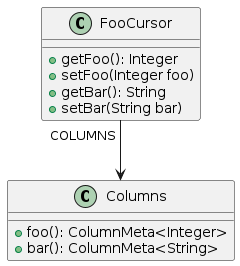
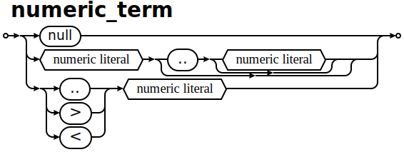
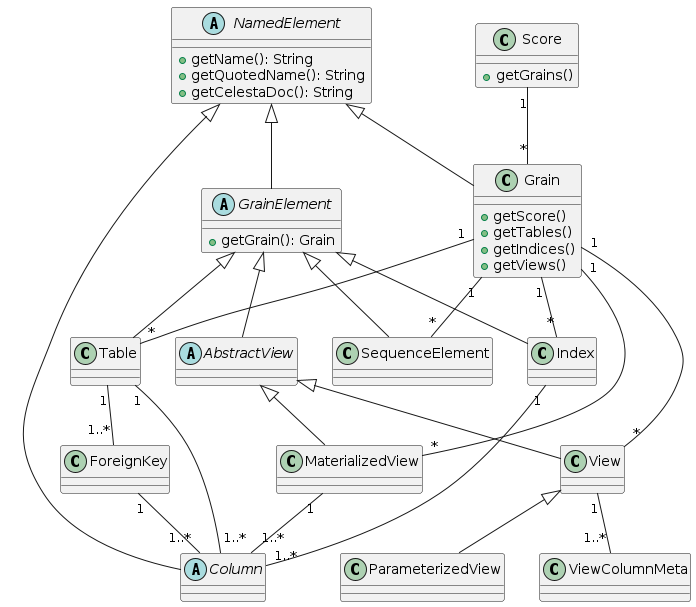
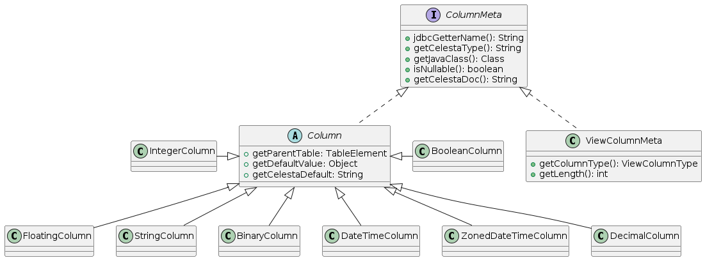

Что такое Celesta?
Celesta — инструмент для Java backend-разработчиков, ищущих более быстрые и простые способы разработки приложений на основе реляционных баз данных.
Это Java-библиотека и Maven-плагин, предоставляющие возможности миграций базы данных, ORM и тестирования.
В отличие от, например, Hibernate + Liquibase, Celesta не отделяет задачи дизайна схемы базы данных и миграций схемы, и предоставляет быстрый и легковесный способ юнит-тестирования кода, работающего с базой данных.
Может быть использована путём подключения внешней зависимости через Maven Central, также имеет собственный Spring Boot starter.

Основные возможности
-
Независимость от типа базы данных. Решение, сделанное в Celesta, может переноситься между любыми базами данных поддерживаемых типов с сохранением функциональности. Мы по возможности прозрачно для разработчиков решений поддерживаем следующие типы СУБД (список не окончательный):
-
MS SQL Server,
-
Oracle,
-
Postgre SQL,
-
H2,
-
Firebird (beta).
-
-
Database-first проектирование структуры данных. В Celesta проектируются таблицы, связи между ними и представления, а не классы.
-
Автоматическая миграция структуры базы данных на основе идемпотентного DDL.
-
Упрощённое модульное тестирование: быстрые тесты классов, работающих с базой данных, на основе in-memory режима базы данных H2.
-
Автоматически генерируемый на основе структуры БД промежуточный слой доступа к таблицам для написания бизнес-логики.
-
Взаимодействие приложения с уже сложившейся базой данных (интеграция приложений через базу данных).
-
Распределение прав доступа к таблицам.
-
Аудит изменений, производимых в таблицах.
1. Часть 1. Быстрый старт
1.1. Демонстрационный пример
1.1.1. Celesta и Spring Boot
Тестовый пример, демонстрирующий возможности Celesta в проекте на основе Spring Boot, доступен здесь: https://github.com/inponomarev/celesta-demo/.
Для создания проекта Spring Boot с помощью Maven необходимо указать следующие зависимости:
<properties>
<!-- Проверьте свежую версию ru.curs:spring-boot-starter-web на Maven Central -->
<spring.boot.starter.celesta.version>3.0.0</spring.boot.starter.celesta.version>
<!-- Проверьте свежую версию ru.curs:celesta-parent на Maven Central -->
<celesta.version>8.0.1</celesta.version>
</properties>
. . .
<dependencies>
<dependency>
<groupId>org.springframework.boot</groupId>
<artifactId>spring-boot-starter-web</artifactId>
</dependency>
<dependency>
<groupId>ru.curs</groupId>
<!-- Собственный Spring Boot starter облегчает конфигурацию Celesta в Spring Boot приложениях -->
<artifactId>spring-boot-starter-celesta</artifactId>
<version>${spring.boot.starter.celesta.version}</version>
<!-- Исключаем зависимость от Celesta, указанную в Celesta spring boot starter,
чтобы ниже указать более актуальный номер версии Celesta -->
<exclusions>
<exclusion>
<groupId>ru.curs</groupId>
<artifactId>celesta-system-services</artifactId>
</exclusion>
</exclusions>
</dependency>
<dependency>
<!-- Подключаем Celesta более свежей версии, чем предлагает Spring Boot Starter-->
<groupId>ru.curs</groupId>
<artifactId>celesta-system-services</artifactId>
<version>${celesta.version}</version>
</dependency>
...
</dependencies>Также для кодогенерации классов доступа к данным понадобится ru.curs:celesta-maven-plugin.
В его настройках необходимо указать путь к папке score:
<build>
<plugins>
<plugin>
<groupId>ru.curs</groupId>
<artifactId>celesta-maven-plugin</artifactId>
<version>${celesta.version}</version>
<executions>
<execution>
<goals>
<goal>gen-cursors</goal>
<goal>gen-score-resources</goal>
<goal>gen-test-cursors</goal>
<goal>gen-test-score-resources</goal>
</goals>
</execution>
</executions>
</plugin>
</plugins>
</build>В папке src/main/celestasql следует разместить скрипты определения базы данных на языке CelestaSQL.
Например,
-- celestasql/ru/curs/demo/demo.sql
CREATE SCHEMA demo VERSION '1.0';
/**Заголовок счёта*/
CREATE TABLE OrderHeader(
id VARCHAR(30) NOT NULL,
date DATETIME,
customer_id VARCHAR(30),
/**Название клиента */
customer_name VARCHAR(50),
manager_id VARCHAR(30),
CONSTRAINT Pk_OrderHeader PRIMARY KEY (id)
);
/**Строка счёта*/
CREATE TABLE OrderLine(
order_id VARCHAR(30) NOT NULL,
line_no INT NOT NULL,
item_id VARCHAR(30) NOT NULL,
item_name VARCHAR(100),
qty INT NOT NULL DEFAULT 0,
cost REAL NOT NULL DEFAULT 0.0,
CONSTRAINT Idx_OrderLine PRIMARY KEY (order_id, line_no)
);
ALTER TABLE OrderLine ADD CONSTRAINT fk_OrderLine FOREIGN KEY (order_id) REFERENCES OrderHeader(id);
create materialized view OrderedQty as
select item_id, sum(qty) as qty from OrderLine group by item_id;Команда mvn verify приведёт к появлению Java-файлов OrderHeaderCursor.java
и OrderLineCursor.java с классами курсоров в папке target/generated-sources/celesta/….
Эти классы можно использовать при создании сервисов (см. также более полный демонстрационный пример):
@Service
public class DocumentService {
@CelestaTransaction
public void postOrder(CallContext context, OrderDto doc) {
try (OrderHeaderCursor header = new OrderHeaderCursor(context);
OrderLineCursor line = new OrderLineCursor(context)) {
. . .
}
}Управление настройками проекта осуществляется любым доступным для Spring Boot способом, в частности, с помощью файла application.yml.
1.1.2. Использование Celesta совместно со Spring-JDBC
Celesta использует свой собственный пул соединений JDBC, если не предоставлено иной альтернативы.
Если вам необходимо использовать какой-либо особенный пул соединений, или если вы желаете использовать DataSource, предоставляемый фреймворком Spring, вы также можете это сделать.
В самостоятельном приложении вы можете использовать метод Celesta.createInstance, подставив DataSource в качестве параметра.
spring-boot-starter-celesta будет автоматически использовать DataSorce, если он предоставлен Spring-ом.
Например, если добавить в проект следующую зависимость:
<dependency>
<groupId>org.springframework.boot</groupId>
<artifactId>spring-boot-starter-jdbc</artifactId>
</dependency>и прописать следующие аргументы в application.yml
spring:
datasource:
url: jdbc:postgresql://<DATABASE>
username: <USER>
password: <PWD>
hikari:
auto-commit: false
celesta:
jdbc:
url: jdbc:postgresqlCelesta запустится с Hikari Connection Pool, предоставленным Spring-ом. Обратите внимание на следующее:
|
2. Часть 2. Технические детали и настройка Celesta
2.1. Словарь основных понятий
- Партитура (Score)
-
совокупность схем базы данных, с которыми работает данный экземпляр Celesta, представленных в виде CelestaSQL скриптов.
- CelestaSQL скрипт
-
текстовый файл, который содержит информацию о
-
схемах базы данных. Внимание: по историческим причинам, синонимом понятию «схема» (schema) в Celesta также является слово «гранула» (grain).
-
таблицах, включая информацию о
-
полях и их типах (подмножество допустимых типов выбрано таким образом, чтобы обеспечить универсальную поддержку во всех поддерживаемых типах баз данных)
-
первичном ключе (primary key) таблицы – его наличие обязательно требуется для работы классов доступа к данным,
-
DEFAULT-значениях на полях, -
ограничениях
NOT NULLна полях,
-
-
индексах,
-
последовательностях (sequences),
-
связях между таблицами (foreign keys),
-
представлениях (views), включая материализованные представления (materialized views) и параметризованные (functions).
-
В процессе работы Celesta Maven Plugin на основе данных скриптов кодогенерируются классы доступа к данным, а сами эти файлы копируются в ресурсы компилируемых jar-файлов.
В процессе запуска Celesta происходит автоматическое обновление схем базы данных до вида, заданного в CelestaSQL-скриптах.
- Версия схемы (Schema version tag)
-
идентификатор версии в виде перечисленных через запятую компонент, явно проставляемый разработчиком гранулы в команде
CREATE GRAIN … VERSION …скрипта гранулы. Служит для защиты от непроизвольного автоматического даунгрейда базы данных при запуске старой версии гранулы на более свежей версии базы данных. Автообновление базы данных никогда не будет выполняться, если version tag в базе данных больше, чем version tag скрипта гранулы, либо если версии не согласованы. - Контрольная сумма схемы (Grain checksum)
-
автоматически вычисляемая контрольная сумма скрипта гранулы. Служит для различения CelestaSQL-скриптов по их содержанию. Скрипты CelestaSQL, имеющие одинаковый version tag, могут преднамеренно (в процессе разработки) или непреднамеренно (из-за неаккуратности разработчика) иметь различное содержание. База данных, автоматически сформированная по grain creation script, помимо version tag, хранит и контрольную сумму grain creation script’а, чтобы отследить момент, когда к ней установило контакт приложение с изменённым метаописанием гранулы. Одновременное равенство version tag и grain checksum является достаточным условием для того, чтобы продолжать работу без попыток обновления структуры базы данных. Ради лёгкости проверки и открытости алгоритма контрольная сумма состоит из двух значений: длины файла скрипта (записываемой в формате десятичного числа) и его CRC32 (записываемом в виде 8 шестнадцатеричных цифр).
- Системная гранула celesta
-
особая гранула, структура таблиц которой не подлежит изменению. Таблицы этой гранулы используются системой во внутренних целях. При этом запись и редактирование данных в части из этих таблиц является частью стандартной настройки системы. Описание гранулы "celesta" см. в разделе Системные таблицы Celesta.
- Таблица celesta.grains
-
центральная системная таблица Celesta в базе данных. Наличие данной таблицы указывает на то, что Celesta подсоединена к «своей» базе данных, в противном случае Celesta будет пытаться развернуть базу «с нуля». Таблица содержит информацию о состоянии гранул, развёрнутых в базе. Описание полей таблицы содержится в разделе «Системные таблицы Celesta». Информация в этой таблице активно используется во время startup sequence.
- Последовательность запуска гранулы (Grain startup sequence)
-
операции, выполняемые системой Celesta для каждой гранулы при запуске. При этом, при наличии необходимости и возможности, происходит автоматическая миграция базы данных.
- Автоматическая миграция базы данных
-
составная часть startup sequence, при которой происходит сравнение структуры существующей базы данных со структурой, заданной метаданными в Celesta при помощи скриптов создания гранул. После сравнения разница устраняется с помощью автоматически создаваемых и исполняемых CREATE/ALTER команд.
- Класс доступа к данным (курсор)
-
автоматически кодогенерируемый на основе CelestaSQL-скрипта класс, через который можно осуществлять взаимодействие с данными таблицы, представления или последовательности.
2.2. Maven-плагин
Celesta-maven-plugin осуществляет кодогенерацию классов доступа к данным на основе CelestaSQL-скриптов. Подключение этого плагина обязательно для проектов, использующих Celesta.
Пример использования:
<plugin>
<groupId>ru.curs</groupId>
<artifactId>celesta-maven-plugin</artifactId>
<version>${celesta.version}</version>
<configuration>
<scores>
<score>. . .</score>
</scores>
<testScores>
<testScore>. . .</testScore>
</testScores>
<!-- unnecessary, true by default -->
<snakeToCamel>true</snakeToCamel>
</configuration>
<executions>
<execution>
<goals>
<goal>gen-cursors</goal>
<goal>gen-score-resources</goal>
<goal>gen-test-cursors</goal>
<goal>gen-test-score-resources</goal>
</goals>
</execution>
</executions>
</plugin>Параметры конфигурации плагина:
-
scores— пути к папкам в проекте, где размещены CelestaSQL-скрипты, описывающие рабочую базу данных. По умолчанию содержит путьsrc/main/celestasql. -
testScores— пути к папкам в проекте, где размещены CelestaSQL-скрипты, описывающие базу данных, используемую только для модульного тестирования. По умолчанию содержит путьsrc/test/celestasql. -
snakeToCamel(boolean-параметр, по умолчанию равен true) – следует ли конвертировать имена таблиц и полей, заданные в "snake_case" в CelestaSQL, в "CamelCase" в классах доступа к данным, чтобы соответствовать стандартам именования в Java.
Celesta Maven Plugin производит следующие операции:
-
Кодогенерирует курсоры на основе CelestaSQL:
-
На фазе
generate-sourcesпроисходит кодогенерация курсоров изscoresи опционально папкиscoreвtarget/generated-sources/celesta, -
На фазе
generate-test-sources— изtestScoresвtarget/generated-test-sources/celesta.
-
-
Копирует CelestaSQL файлы в ресурсы:
-
На фазе
generate-resourcesпроисходит копирование файлов CelestaSQL изscoresи опционально папкиscoreвgenerated-resources/score -
На фазе
generate-test-resources— изtestScoresвgenerated-test-resources/score
-
-
Генерирует индекс
score.filesс перечнем относительных путей к .sql-файлам в ресурсах:-
На фазе
generate-resources→generated-resources/score/score.files -
На фазе
generate-test-resources→generated-test-resources/score/score.files
-
Эти файлы используются во время выполнения Celesta для того, чтобы найти пути ко всем CelestaSQL-файлам внутри jar-файлов на classpath.
2.3. Операции, выполняемые при инициализации Celesta
2.3.1. Общая последовательность операций
Инициализация Celesta происходит в несколько этапов, о чём сообщает вывод в лог:
Celesta ver. 7.2.4
Celesta pre-initialization: system settings reading...
done.
Celesta initialization: score parsing...
done.
Celesta initialization: database upgrade...
done.-
В процессе чтения системных настроек Celesta анализирует состояние параметров конфигурации, проверяет тот факт, что все обязательные параметры заданы, и что все параметры заданы корректно. При обнаружении ошибки в настройках запуск системы не будет продолжен.
-
При разборе метаданных происходит чтение всех доступных файлов *.sql, их синтаксический анализ и построение внутренней объектной модели базы данных (метаданных). Система собирает из скриптов CelestaSQL информацию о гранулах, таблицах и полях. Вычисляются их контрольные суммы, находятся версии. При возникновении ошибок синтаксиса или несогласованности CelestaSQL-скриптов на данном этапе запуск системы прерывается.
-
Процедура авто-миграции базы данных.
2.3.2. Автоматическая миграция базы данных
На этом этапе сервер приложений соединяется с базой данных и проверяет наличие в ней системной таблицы celesta.grains.
Если таблица не найдена, она автоматически создаётся (CREATE-командой), однако это происходит лишь в следующих случаях: 1) база данных совершенно пустая 2) в параметрах конфигурации выставлено свойство force.dbinitialize (это защищает от «порчи» существующих, непустых баз данных при ошибочном присоединении к ним системы Celesta).
Если в процессе проверки наличия/создания таблицы celesta.grains возникла ошибка, то генерируется фатальная ошибка и система не запускается.
Определение необходимости миграции гранулы (схемы)
Далее идёт цикл по всем доступным в метаданных гранулам (схемам) и всем доступным в celesta.grains гранулам. (При этом из процесса миграции исключаются гранулы, объявленные с опцией WITH NO AUTOUPDATE в CelestaSQL-скрипте).
-
Если гранула есть в метаданных, но её нет в таблице
celesta.grains— выполняется апдейт по CelestaSQL-скрипту (т. е. предполагается, что соответствующие таблицы в базе данных могут и присутствовать). -
Если гранула есть в
celesta.grains, но её нет в метаданных — ничего не происходит. Автоматически гранулы из базы данных не удаляются, т. к. их таблицы могут содержать важную информацию. Просто для этих таблиц не будут сформированы классы доступа к данным. -
Если гранула есть и там, и там: сервер приложений находит в таблице
celesta.grainsзапись про состояние, версию и контрольную сумму метаданных, которые были «накатаны» на базу данных при последнем запуске и сравнивает с версией метаданных, которыми сервер располагает. Записанное в таблицеcelesta.grainsсостояние может принимать одно из этих значений:-
recover (3) — действуем аналогично отсутствию записи (см. п. 1).
-
lock (4) — структура не обновляется, переходим к следующей грануле.
-
upgrading (1) или error (2) — останов процесса с ошибкой “Cannot proceed with database upgrade: there are grains not in 'ready', 'recover' or 'lock' state”.
-
ready (0) — продолжение процесса.
-
Если версия и контрольная сумма совпадают — ничего не происходит. Система полагает, что структура соответствующей гранулы базы данных уже соответствует CelestaSQL-скрипту и экономит время на анализе существующей структуры.
-
Если версия различна: если версия изменилась в сторону увеличения — апгрейд вне зависимости от контрольной суммы. Если в сторону уменьшения либо если версия несовместима (см. описание логики работы с version tags) — вне зависимости от контрольной суммы останов с ошибкой: “Grain '…' version '…' is lower than / is inconsistent with database grain version '…'. Will not proceed with auto-upgrade.”
-
Если версия совпадает, а контрольная сумма различна – апгрейд.
-
-
Процедура миграции гранулы (схемы).
Если на основании описанного выше алгоритма система решает, что апгрейд гранулы необходим — начинается процесс синхронизации структуры БД и структуры данных, описанных в CelestaSQL-скрипте. Все недостающие объекты — таблицы, поля, ключи, индексы, представления и т. п. — создаются. Объекты, требующие модификации (например, типы данных полей, состав полей в индексе, SQL-запросы представлений) — модифицируются. При этом система прикладывает максимальные усилия для того, чтобы модификация прошла автоматически и без ошибок. Если в ряде случаев этого можно достичь всегда (например, в случае замены SQL-запроса в представлении на другой корректный, или при изменении состава полей в индексе), иногда без ручного вмешательства в процесс и выполнения ad hoc скрипта автоматически мигрировать схему невозможно (см. на эту тему пост об идемпотентных миграциях). Ошибки на данном этапе приводят к переводу гранулы в состояние error и требуют ручного вмешательства администратора базы данных.
Если объект был удалён из CelestaSQL-скрипта, во избежание потери данных автоматический мигратор удаляет из БД лишь те объекты, которые не содержат данных (т. е. таблицы и поля автоматически не удаляются и могут быть удалены вручную в ad hoc-миграционном скрипте, с удалённых полей удаляются внешние ключи).
2.3.3. Полное или частичное отключение автоматической миграции
В Celesta имеется несколько способов отключить процесс автомиграции:
-
на уровне всей базы данных — с помощью опции
skip.dbupdateв параметрах конфигурации, -
на уровне схемы — выставив её статус в таблице celesta.grains в 4 либо объявив опцию
WITH NO AUTOUPDATEв выражении создания гранулы (схемы), -
на уровне таблицы — объявив опцию
WITH NO AUTOUPDATEв выражении создания таблицы.
2.4. Параметры конфигурации Celesta
К параметрам конфигурации Celesta относятся общесистемные параметры, такие как параметры подключения к базе данных.
Эти настройки в виде экземпляра Properties передаются в конструктор класса BaseAppSettings, который,
в свою очередь, является параметром конструктора класса Celesta.
При использовании Celesta Spring Boot starter
эти настройки транслируются через конфигурацию любым из способов способов конфигурации Spring Boot приложений, например, через файл
application.yml.
В последнем случае корневым ключом YAML-файла должен быть celesta, а остальные свойства записываются в иерархической структуре.
Например, для задания свойств jdbc.url, jdbc.username и jdbc.password структура файла application.yml будет следующей:
celesta:
jdbc:
url: jdbc:postgresql://127.0.0.1:5432/celesta
# url: jdbc:sqlserver://172.16.1.114:52836;databaseName=celesta
# url: jdbc:oracle:thin:192.168.110.128:1521:XE
username: foo
password: barНекоторые IDE, например, IntelliJ IDEA, выполняют контекстную подсказку при редактировании файла application.yml.
| Параметр | Назначение | Обязательный | Значение по умолчанию |
|---|---|---|---|
( |
URL подключения к JDBC-драйверу |
Да |
- |
( |
Логин для подключения к базе данных |
Нет (если не заполнен, используется информация из JDBC URL) |
- |
( |
Пароль для подключения к базе данных |
Нет (если не заполнен, используется информация из JDBC URL) |
- |
|
Заставляет систему при инициализации полностью пропустить фазу обновления базы данных (включая создание системных таблиц). Этот параметр требуется при некоторых сценариях разворачивания Celesta на заранее существующей базе данных. |
Нет |
|
|
Заставляет систему при инициализации создавать системные объекты Celesta даже в том случае, если база данных не пустая (уже содержит таблицы). Этот параметр рекомендуется использовать с осторожностью, чтобы не повредить существующую базу данных. Этот параметр требуется при некоторых сценариях разворачивания Celesta на заранее существующей базе данных. |
Нет |
|
|
Значение |
Нет |
|
|
Если указано целочисленное значение, и при этом |
Нет |
|
|
Использовать ли контроль ссылочной целостности (контроль Foreign Keys), работая с базой H2 в in-memory режиме (для всех других БД данный параметр игнорируется). По умолчанию при работе с H2 in-memory, ссылочная целостность отключается для упрощения создания автоматических тестов. |
Нет |
|
2.5. Системные таблицы Celesta
2.5.1. Структура системной схемы celesta
Помимо таблиц и схем, определённых пользователем, система Celesta добавляет в базу данных таблицы в собственной системной схеме celesta, структура которой представлена на диаграмме ниже.
Структура (в том числе состав полей) таблиц, относящихся к системной грануле "celesta", не подлежит изменению, а для доступа к их данным используются встроенные классы из пакета ru.curs.celesta.syscursors. Тем не менее, изменение данных в части из этих таблиц является частью штатной настройки системы.
Системные таблицы предназначены для:
-
Координирования автоматической миграции (таблица
grains). -
Распределения прав доступа к таблицам и представлениям (
permissions,roles,userroles). -
Настройки системы логирования (
logsetup) и хранения логов (log,calllog).

Назначение таблиц:
- celesta.grains
-
перечень гранул со статусами. Ведётся автоматически, ручные изменения разработчиком решений сводятся к выставлению статуса "recover" на грануле после неудавшейся попытки автообновления и к удалению записи об удалённой грануле.
- celesta.tables
-
перечень таблиц и представлений. Содержимое данной таблицы автоматически синхронизируется с перечнем таблиц и представлений, доступных в гранулах Celesta, пользователю не следует вмешиваться в данные этой таблицы (в любом случае изменения будут потеряны при следующей синхронизации). Поле tabletype указывает на то, является запись таблицей ("T") или представлением ("V").
- celesta.roles
-
перечень ролей celesta. Сюда следует добавлять роли, в том числе здесь находятся роли с системными именами "reader", "editor" и т. д. (о ролях с системными именами см. в разделе «Распределение прав доступа»).
- celesta.userroles
-
связь идентификаторов пользователей (логинов) с ролями. Заполняется администратором системы.
- celesta.permissions
-
разрешения ролям на таблицы. Заполняется администратором.
- celesta.logsetup
-
настройки логирования. Заполняется администратором.
- celesta.log
-
лог изменений. Заполняется системой автоматически при каждом изменении данных, однако данные пишутся лишь по таблицам и действиям, указанным в
celesta.logsetup. - celesta.calllog
-
лог вызовов методов. Заполняется в режиме профилирования.
2.5.2. Таблица celesta.grains
Данная таблица является важнейшей из системных таблиц Celesta, т. к. её содержимое управляет синхронизацией структуры базы данных с метаданными в момент запуска системы. Таблица содержит следующие поля:
| Имя поля | Тип поля | Значение поля |
|---|---|---|
|
|
имя (код) гранулы |
|
|
version tag гранулы |
|
|
длина CelestaSQL-скрипта гранулы в байтах |
|
|
CRC32 CelestaSQL-скрипта гранулы |
|
|
статус гранулы:
|
|
|
дата и время последнего обновления статуса гранулы |
|
|
комментарий (например, сообщение об ошибке при последнем неудавшемся автообновлении) |
2.5.3. Система распределения прав доступа
Как видно из структуры таблиц, права на таблицы раздаются ролям, прямой раздачи прав пользователям не предусмотрено.
В поле roleid указывается идентификатор роли, в полях grainid и tablename — ссылка на таблицу.
В битовых полях r, i, m, d выставляются флаги, если необходимы права, соответственно, на чтение, вставку, модификацию и удаление.
Предусмотрены также специальные, системные имена ролей: reader и editor, а также роли вида <имя гранулы>.reader и <имя гранулы>.editor.
Роль reader даёт право на чтение всех без исключения таблиц, роль <имя гранулы>.reader (например, "foo.reader") даёт право на чтение всех таблиц в соответствующей грануле.
Роль editor даёт полные права (на чтение, вставку, модификацию и удаление) всех таблиц. Роль <имя гранулы>.editor (например, "foo.editor") даёт полные права на все таблиц в соответствующей грануле.
2.5.4. Система логирования
При любом изменении данных, производимых через курсоры Celesta, работает не только система распределения прав доступа, но также и система логирования изменений данных, записывая все изменения в таблицу celesta.log. Однако, чтобы celesta.log не засорялась потенциально огромным количеством ненужных данных, логируются лишь изменения на таблицах, явно указанных в таблице celesta.logsetup. Более того, имеется возможность отдельно включать логирование вставки, модификации и удаления записи.
Для того, чтобы включить логирование изменений данных таблиц, производимых через систему Celesta, необходимо занести соответствующие настройки в таблицу celesta.logsetup. При этом в полях grainid и tablename указывается ссылка на таблицу, а в битовых полях i, m, d выставляются флаги, если необходимо логирование, соответственно, вставки, модификации и удаления.
Таблица celesta.log состоит из следующих полей:
| Имя поля | Тип поля | Значение поля |
|---|---|---|
|
|
автоинкрементируемый целочисленный номер записи в таблице лога |
|
|
время записи |
|
|
идентификатор пользователя, от имени которого произведено изменение |
|
|
идентификатор пользовательской сессии, в рамках которой произведено изменение |
|
|
идентификатор гранулы |
|
|
имя таблицы |
|
|
тип действия (I для вставки, M для модификации, D для удаления) |
|
|
значение первого поля первичного ключа (сведённое к текстовому типу) |
|
|
значение второго поля первичного ключа (если есть, сведённое к текстовому типу) |
|
|
значение третьего поля первичного ключа (если есть, сведённое к текстовому типу) |
|
|
прежнее состояние записи (поля сведены к тексту и перечислены через запятую в формате CSV, информация обрезана по длине поля). Значение поля заполняется для действий M и D |
|
|
текущее состояние записи в том же формате, что и в поле |
2.5.5. Система профилирования
Для поиска и устранения проблем, связанных с быстродействием, Celesta может работать в режиме профилирования, включаемом при помощи метода setProfilemode(true) экземпляра Celesta.
В режиме профилирования информация обо всех вызовах процедур записывается в таблицу calllog, состоящую из следующих полей:
| Имя поля | Тип поля | Значение поля |
|---|---|---|
|
|
автоинкрементируемый целочисленный номер записи в таблице лога |
|
|
идентификатор пользовательской сессии, в которой была запущена процедура |
|
|
идентификатор пользователя, от имени которого работала пользовательская сессия |
|
|
имя выполнявшейся процедуры |
|
|
время начала выполнения процедуры |
|
|
общее время выполнения процедуры (в миллисекундах) |
3. Часть 3. Проектирование базы данных в Celesta
3.1. CelestaSQL
3.1.1. Язык CelestaSQL определения объектов базы данных
| Скрипты на языке CelestaSQL должны иметь кодировку UTF-8. |
На языке Celesta SQL пишутся скрипты определения гранул. Скрипт на языке CelestaSQL состоит из конструкций
в обязательном порядке разделённых точкой с запятой, начиная с CREATE GRAIN:
3.1.2. Комментарии в языке CelestaSQL
CelestaSQL поддерживает стандартные однострочные и многострочные комментарии, а также комментарии CelestaDoc:
-- однострочный комментарий
/*многострочный
комментарий*/
/**комментарий CelestaDoc*/Обычные комментарии могут использоваться в любом месте текста, комментарии CelestaDoc — только непосредственно перед определением гранулы, таблицы, поля или индекса.
3.1.3. Идентификаторы объектов в языке CelestaSQL
Идентификаторы объектов — это, иначе говоря, имена гранул, таблиц, полей, индексов, ограничений и представлений, их синтаксис в Celesta имеет ряд строгих ограничений.
-
В обычных СУБД дозволяется, чтобы идентификаторы объектов содержали знаки пробела и неалфавитные знаки, если эти имена заключены в обрамляющие символы, например «[]» для MS SQL Server. Т. е. в MS SQLServer допустимо, например, такое имя таблицы: [Long Table$Name]. Celesta, однако, не может поддерживать пробелы и неалфавитные знаки в идентификаторах потому, что имя каждой Celesta-таблицы должно являться именем Java-класса, а имя каждого Celesta-поля — именем Java-переменной. Поэтому идентификатор любого именованного объекта CelestaSQL должен как минимум удовлетворять правилам наименования переменной в Java, т. е. может состоять только из больших и малых букв латинского алфавита, цифр и знаков подчёркивания, при этом не может начинаться с цифры.
-
Заключение идентификаторов Celesta в кавычки в скриптах CelestaSQL не допускается на уровне синтаксиса, т. к. практической надобности в этом нет (имена никогда не содержат пробелов). На системном уровне при формировании запросов к СУБД Celesta, однако, всегда заключает имена своих объектов в прямые кавычки ("ANSI quotes"), чтобы гарантировать, что базы данных Oracle, PostgreSQL и H2 не будут нарушать регистр букв, составляющих идентификатор.
-
Идентификаторы в Celesta являются чувствительными к регистру, однако нельзя создавать две таблицы, имена которых отличаются только регистром.
-
Длина любого идентификатора в Celesta не может быть больше 30 символов.
-
Идентификаторы (префиксы) гранул, кроме того, не могут содержать в себе знаков подчёркивания. Это связано с тем, что комбинация имени гранулы со знаком подчёркивания и другим идентификатором зачастую используется во внутрисистемных целях Celesta, и запрет на использование знака подчёркивания в именах гранул необходим для исключения возможных неоднозначностей.
| Обычной практикой является написание идентификаторов в CelestaSQL в "snake_case" — в процессе трансформации в Java-классы они конвертируются в 'CamelCase'. |
3.1.4. Конструкция CREATE SCHEMA (GRAIN)
С выражения CREATE SCHEMA должен начинаться любой скрипт определения гранулы.
Используется следующий синтаксис (слова GRAIN и SCHEMA являются синонимами):
Опция WITH NO AUTOUPDATE исключает схему целиком из процесса автообновления базы данных.
Как и соответствующая опция таблицы, может быть использована в ситуации, когда структура схемы находится под внешним управлением.
Указание версии обязательно для исключения непроизвольного автоматического даунгрейда базы данных при запуске старой версии гранулы на более свежей версии базы данных.
В этом смысле, по отношению к тэгу «1.23,TITAN3.34»:
-
«1.23,TITAN3.35» – более свежая версия (обновилась модификация), можно выполнять автоапгрейд
-
«1.24,TITAN3.34» – более свежая версия (обновилась базовая версия), можно выполнять автоапгрейд
-
«1.23,TITAN3.34,PLUTO1.00» – более свежая версия (добавилась ещё одна модификация), можно выполнять автоапгрейд
-
«TITAN3.34,1.23» – та же самая версия (порядок следования тэгов не играет роли), автоапгрейд выполняться будет лишь при несовпадении контрольных сумм, ошибки не произойдёт
-
«1.22,TITAN3.34» – более старая базовая версия, автоапгрейд выполняться не будет, произойдёт ошибка и Celesta остановится.
-
«1.22,TITAN3.36» – несогласующаяся версия, апдейт выполняться не будет, ошибка. Версии «1.23,PLUTO1.00», «1.25» также будут несогласующимся с версией «1.23,TITAN3.34» и не станут накатываться автоматически.
Каждая из версий сравнивается, как число с плавающей запятой.
3.1.5. Конструкция CREATE SEQUENCE
Используется следующий синтаксис:
Основными ограничениями и отличиями этой конструкции от аналогичной конструкции в различных СУБД являются:
-
Если не указано значение
MINVALUE, то оно автоматически выставляется равным значениюSTART WITH(по умолчанию 1). -
Если не указано значение
MAXVALUE, то оно автоматически выставляется равным значениюLong.MAX_VALUE. -
Значение
START WITHне обновляется для созданных ранее последовательностей, даже если было изменено в файле гранулы (связано с тем, что Oracle разрешает данную операцию только через удаление и пересоздание последовательности, а идеология Celesta не предусматривает удаление stateful объектов из БД). -
Если в грануле присутствует таблица с именем, например,
A, то является недопустимым создание последовательности с именемA_seq, так как это имя зарезервировано системой.
3.1.6. Конструкция CREATE TABLE
Используется следующий синтаксис:
Иными словами, в конструкции CREATE TABLE в скобках через запятую в любом порядке могут быть перечислены определения полей, определения первичных ключей или определения внешних ключей, а за скобками, возможно, перечислены опции.
На практике определения всех полей идут подряд в самом начале, далее — определения составных первичных ключей (первичные ключи, состоящие из одного поля, можно определять на самом поле) и определения составных внешний ключей (опять же, внешние ключи, состоящие из одного поля, можно определять на самом поле).
Определения полей
field_definition (Определение поля) — конструкция, задающая тип поля, название поля, его свойства NULL/NOT NULL и DEFAULT, опционально может заканчиваться конструкцией PRIMARY KEY и/или FOREIGN KEY.
Сокращенное определение внешнего ключа (inline_fk_definition) имеет следующий синтаксис:
Здесь table_ref — ссылка на таблицу, которая может быть однокомпонентной (если таблица, на которую указывает внешний ключ, находится в текущей грануле) или двухкомпонентной, с явным указанием имени гранулы:
Определение синтаксиса правил внешних ключей (fk_rules) см. в разделе «Внешние ключи».
Типы данных
Используется следующая система типов данных.
| Celesta | Microsoft SQL Server | Oracle | PostgreSQL | Firebird | H2 | Java type for cursor | |
|---|---|---|---|---|---|---|---|
Integer (32-bit) |
INT |
INT |
NUMBER |
INT4 |
INTEGER |
INTEGER |
java.lang.Integer |
Floating point (64-bit) |
REAL |
FLOAT(53) |
REAL |
FLOAT8 [= DOUBLE PRECISION] |
DOUBLE PRECISION |
DOUBLE |
ava.lang.Double |
Fixed point (decimal) |
DECIMAL(p,s) |
DECIMAL(p,s) |
NUMBER(p,s) |
NUMERIC(p,s) |
DECIMAL(p,s) |
DECIMAL(p,s) |
java.math.BigDecimal |
String (Unicode) |
VARCHAR(n) |
NVARCHAR(n) |
NVARCHAR(n) |
VARCHAR(n) |
VARCHAR(n) |
VARCHAR(n) |
java.lang.String |
Long string (Unicode) |
TEXT |
NVARCHAR(MAX) |
NCLOB |
TEXT |
BLOB SUB_TYPE TEXT |
CLOB |
java.lang.String |
Binary |
BLOB |
VARBINARY(MAX) |
BLOB |
BYTEA |
BLOB |
VARBINARY(MAX) |
java.lang.String |
Date/time |
DATETIME |
DATETIME |
TIMESTAMP |
TIMESTAMP |
TIMESTAMP |
TIMESTAMP |
java.util.Date |
Date/time with time zone |
DATETIME WITH TIME ZONE |
DATETIMEOFFSET |
TIMESTAMP WITH TIME ZONE |
TIMESTAMPZ |
TIMESTAMP WITH TIME ZONE |
TIMESTAMP WITH TIME ZONE |
java.time.ZonedDateTime |
Boolean |
BIT |
BIT |
NUMBER [check in (0, 1)] |
BOOL |
SMALLINT [check in (0, 1)] |
BOOLEAN |
java.lang.Boolean |
См. также раздел «Особенности работы Celesta с поддерживаемыми типами СУБД».
Для каждого типа поля имеется свой вариант определения:
Вместо конструкции DEFAULT <целое число> для поля с типом INT может использоваться конструкция NEXTVAL(<sequence name>).
Таким образом значение колонки будет инкрементироваться при вставке в зависимости от указанной последовательности.
Стоит отметить, что можно использовать только последовательности, объявленные в той же грануле, что и таблица, к которой принадлежит колонка.
Здесь <binary literal> — шестнадцатеричное представление последовательности байтов, начинающееся с 0x и не заключённые в кавычки, например: 0xFFAAFFAAFF.
В качестве значения DEFAULT для поля с типом DATETIME может использоваться функция GETDATE() (текущий момент времени).
Первичные ключи
primary_key_definition (определение первичного ключа) — конструкция, задающая состав полей, входящих в первичный ключ таблицы. Возможно в двух вариантах:
-
сокращённый вариант — когда ключевые слова “
PRIMARY KEY” идут сразу после определения поля, это даёт возможность более короткой и наглядной записи в случае, когда первичный ключ состоит всего из одного поля, -
полный вариант — когда конструкция
PRIMARY KEYнаходится в определении таблицы среди определения полей, и может содержать как одно поле, так и любое количество полей.
Ограничения:
-
Не допускается создание таблиц без
PRIMARY KEY(за исключениемREAD ONLY-таблиц). Это необходимо для работоспособности классов доступа к данным. -
В таблице может быть не более одного упоминания
PRIMARY KEY, будь то сокращённое выражение в конце определения поля или составное выражение в определении таблицы. -
Не допускается создание PK по полям с типами
BLOBиTEXT. -
Не допускается создание PK по nullable-полям.
-
Не допускается более одного вхождения одного и того же поля в определение PRIMARY KEY.
Внешние ключи
foreign_key_definition (Определение внешнего ключа) — конструкция, задающая связь между таблицами по одному или нескольким полям.
Как и в случае с конструкцией PRIMARY KEY, возможно использование в двух вариантах — сокращённом (встроенном в определение поля, связь по одному полю) и полном (перечисляется среди определений полей).
Кроме того, внешний ключ можно создать вне определения таблицы при помощи конструкции "alter table add constraint":
Ограничения:
-
Foreign key, простой или составной, может ссылаться только на Primary Key, причём полностью. (В Celesta SQL не допускаются ограничения
UNIQUE, поэтому из двух возможностей, стандартно предлагаемых в СУБД для Foreign Keys, остаётся только возможность ссылки на Primary Key). -
Типы полей должны в точности совпадать (если поле – строковое, длина ссылающегося поля должна быть точно равна длине поля, на которое ссылаются).
-
Нельзя создать более одного определения Foreign Key на одном и том же наборе столбцов (частный случай – не может быть двух FK, определённых для одного и того же столбца).
fk_rules — ссылочные действия:
Поддерживаемые ссылочные действия:
-
NO ACTION– запрет удаления/модификации родительской записи, если на неё есть ссылки. -
SET NULL– выставлениеNULLв ссылках. Естественно, использовать это действие запрещено дляNOT NULL-able полей. -
CASCADE– каскадное удаление/обновление полей.
В момент создания foreign key сослаться можно только
-
на таблицу, определённую в текущей грануле выше по тексту,
-
на таблицу, определённую с другой грануле.
| «Зацикленные» ссылки по foreign key (например, вида A→B→C→A) при разработке структуры базы данных в действительности нужны крайне редко и обычно говорят об ошибке проектировщика. Единственный широко применимый практически значимый пример «зацикливания» — ссылка таблицы на саму себя при организации иерархического перечня по принципу parent-child. |
В Celesta не допускается создание «зацикленных» ссылок между таблицами, принадлежащими разным гранулам. Если надо организовать ссылки по кругу между несколькими таблицами внутри гранулы, то это можно сделать, воспользовавшись конструкцией "alter table add constraint foreign key".
В частности, работает следующий пример:
CREATE TABLE aa(idaa INT NOT NULL PRIMARY KEY, idc INT , textvalue nvarchar(10));CREATE TABLE a (ida INT NOT NULL PRIMARY KEY, descr nvarchar(2), parent INT
FOREIGN KEY REFERENCES a(ida), --ссылка таблицы на саму себя
fff INT FOREIGN KEY REFERENCES aa(idaa) --первая часть круговой ссылкивнешний ключ, создаваемый вне таблицы:
ALTER TABLE aa ADD CONSTRAINT fk1
FOREIGN KEY (idc) REFERENCES a(ida); --вторая часть круговой ссылкиПример создания составного ключа, состоящего из двух полей:
CREATE TABLE empfiles(
id INT NOT NULL PRIMARY KEY,
user_id varchar(200) NOT NULL,
orgtype_id varchar(255) NOT NULL,
question_id varchar(30) NOT NULL,
FOREIGN KEY (orgtype_id, question_id) REFERENCES schema.table(field, field)Опции
Celesta позволяет указывать следующие опции после определения таблицы:
Таким образом, поддерживаются следующие возможности:
-
WITH VERSION CHECK— режим по умолчанию: включение механизма отслеживания версий записей для исключения потерянных обновлений (см. раздел «Защита от потерянных обновлений»). Указывать данную опцию явно не требуется. -
WITH NO VERSION CHECK— отключение механизма отслеживания версий записей. Требуется в случаях, когда нет необходимости в защите от потерянных обновлений — например, в таблицах, используемых только для добавления записей. Возможность модифицировать данные в таблице при этой опции сохраняется, но возможны «потерянные обновления». -
WITH READ ONLY— режим «только чтение». Требуется в случаях, когда данные таблицы поступают из внешних источников, а не заносятся средствами Celesta, либо если необходимо подключиться к таблице, относящейся к иному приложению, и потому нежелательно вносить в её данные какие-либо изменения. В этом режиме механизм отслеживания версий записей отключается, а класс для доступа к таблице генерируется без методов модификации данных. Кроме того, для таких таблиц не требуется указывать первичный ключ. -
Опция
NO AUTOUPDATE, которая может применяться совместно с данными опциями, отключает таблицу от процесса автообновления базы данных. Используется в случае, когда структура какой-либо таблицы изменяется в базе данных иными средствами и система не должна пытаться синхронизировать структуру этой таблицы с описанием на языке CelestaSQL автоматически.
3.1.7. Конструкция CREATE INDEX
Индексы применяются для ускорения фильтрации по полям таблиц и создаются при помощи следующей синтаксической конструкции:
Имена индексов должны быть уникальны в пределах гранулы. Все индексы в Celesta допускают повторяющиеся значения.
3.1.8. Конструкция CREATE VIEW
Представления (views) служат для доступа только на чтение к данным, собранным из одной или нескольких таблиц при помощи SQL-запроса SELECT.
Для каждого своего представления Celesta создаёт объект-представление в базе данных, транслируя при этом SQL-запрос на языке CelestaSQL в соответствующий диалект языка SQL.
Представления создаются при помощи синтаксической конструкции
-
<view name> (имя представления) должно быть уникальным в пределах гранулы и не совпадать с именем таблицы.
-
query (запрос) представляет собой SQL-запрос, имеющий следующий синтаксис:
SELECT-запросы в CelestaSQL могут быть объединены в цепочку при помощи UNION ALL.
Как обычно, требуется, чтобы каждый из запросов в цепочке возвращал одинаковое количество столбцов, и столбцы были совпадающих типов.
В качестве названий столбцов, возвращаемых выражением UNION ALL, принимаются названия столбцов первого SELECT-запроса.
Nullability возвращаемых столбцов вычисляется по правилу: выражение столбца может возвращать null, если хотя бы в одном из запросов в цепочке UNION ALL соответствующий столбец может возвращать null.
Основными ограничениями и отличиями такого запроса от SQL-запросов в различных СУБД являются:
-
Запросы строятся только на таблицах и материализованных представлениях (текущей гранулы или соседних гранул). Во избежание выстраивания неэффективных конструкций невозможно построение запросов на обычных представлениях.
-
Конструкция
SELECT *не поддерживается, и всякое поле запроса, если только это не ссылка на поле таблицы с уникальным в рамках запроса именем, должно иметь определённый и уникальный псевдоним. Это нужно для возможности однозначного создания класса-курсора, поля которого соответствуют именам столбцов запроса. -
Не поддерживается конструкция
ORDER BY, т. к. при необходимости определённым образом отсортировать результирующий набор следует воспользоваться методом orderBy(…) соответствующего курсора. -
Не поддерживается конструкция
GROUP BY…HAVING. -
Не поддерживаются
FULL JOIN(объединенияLEFTиRIGHTjoins) иCROSS JOIN(декартовы произведения таблиц). -
Не поддерживается конструкция
WITHи вложенные запросы.
Большая часть из функциональности, не поддерживаемой на уровне CelestaSQL, эффективно эмулируется в API классов доступа к данным.
Ссылка на таблицу (table_ref) имеет синтаксис
Имя гранулы указывать не обязательно, если таблица находится в той же грануле, что и текущее представление.
Терм, определяющий поле представления, имеет следующий синтаксис:
Над выражениям типа INT и REAL допустимы обычные арифметические операции с обычным приоритетом: максимальный приоритет у унарного минуса, далее — умножение и деление («*», «/»), далее — сложение и вычитание («+», «-»).
Над выражениями типа VARCHAR допустима операция конкатенации «||», а также функции UPPER и LOWER, сводящие текст к верхнему и нижнему регистру, соответственно.
Операции над выражениями прочих типов недопустимы.
Ссылки на поля могут быть однокомпонентными (если они однозначно указывают на поле определённой таблицы) либо двухкомпонентными, в этом случае в качестве первой компоненты следует указывать псевдоним таблицы из конструкции FROM либо — если явный псевдоним отсутствует — имя таблицы.
Специальный вид идентификатора <$param id> — знак $, за которым следует идентификатор — служит для ссылок на параметры функций.
Наконец, синтаксис логического выражения condition, используемого в конструкциях JOIN … ON и WHERE:
Следует отметить, что term внутри конструкции SUM должен являться числом.
Особенность конструкции GROUP BY в CelestaSQL заключается в необходимости всегда перечислять в ней все неагрегатные колонки из выборки.
3.1.9. Конструкция CREATE MATERIALIZED VIEW
Материализованные представления (materialized views) служат для доступа только на чтение к агрегатным данным, собранным из одной таблицы и объединенным при помощи выражения GROUP BY.
Для каждого своего материализованного представления Celesta создаёт таблицу в базе данных, модифицируемую триггерами базы данных при изменении родительской таблицы.
Материализованные представления создаются при помощи синтаксической конструкции
Основными ограничениями и отличиями такого запроса от SQL-запросов в различных СУБД являются:
-
Запросы строятся только на таблице текущей гранулы.
-
Конструкция
SELECT *не поддерживается. -
В выборке обязательно должен участвовать хотя бы один агрегатный и хотя бы один неагрегатный столбец.
-
Неагрегатные колонки должны ссылаться на
NOT NULLколонки родительской таблицы. -
Если в
GROUP BYвыражении участвует колонка типаDATETIME, то ее значения будут округляться в точности до дня (часы, минуты и более точные измерения отсекаются). -
Из агрегирующих операций доступны только
SUMиCOUNT.
3.1.10. Конструкция CREATE FUNCTION
Данная конструкция определяет функции — они же параметризованные представления.
Они служат для доступа только на чтение к данным, собранным из одной или нескольких таблиц при помощи SQL-запроса SELECT с учетом переданных параметров.
Функции создаются при помощи синтаксической конструкции
Параметры декларируются через запятую, с заданием имени и типа параметра:
Чтобы сослаться на параметр в выражении функции, необходимо перед именем параметра ставить знак $ (например, param1 будет фигурировать в выражении запроса как $param1).
Основными ограничениями и отличиями такого запроса от SQL-запросов в различных СУБД являются:
-
Конструкция
SELECT *не поддерживается. -
В объявлении обязательно должен иметься хотя бы один параметр.
-
Все объявленные параметры обязательно должны использоваться.
В остальном синтаксическое выражение аналогично обычному View.
Пример функции:
CREATE FUNCTION pView2(param int, param2 varchar) AS
select f1, f2, f3 from t1
where f2 = $param AND f3 = $param2;3.2. CelestaDoc
Аналогично тому, как в языке Java можно документировать объекты кода при помощи JavaDoc, или в языке Python использовать документирующую константу, доступную затем во время выполнения, объекты базы данных, определённые в CelestaSQL, могут быть задокументированы при помощи комментариев в специальном формате: /** … */ (две звёздочки после первого слэша, в отличие от одной звёздочки в простом комментарии). Эти комментарии называются CelestaDoc-комментариями (по аналогии с JavaDoc), и могут находиться в коде CelestaSQL-скрипта непосредственно перед определениями соответствующих объектов, как в примере:
/**описание гранулы*/
CREATE SCHEMA test1 VERSION '1.0';
/**описание последовательности*/
CREATE SEQUENCE test_entryno;
/**описание таблицы*/
CREATE TABLE table2(
/**описание первой колонки*/
column1 INT NOT NULL DEFAULT NEXTVAL(test_entryno) PRIMARY KEY,
/**описание второй колонки*/
column2 INT
);
/**описание индекса idx1*/
CREATE INDEX idx1 ON table2 (column2);
/**описание представления v1*/
CREATE VIEW v1 AS
SELECT DISTINCT column2 FROM table2;В отличие от простых комментариев, которые можно использовать в любом месте CelestaSQL-скрипта, CelestaDoc-комментарии допустимо использовать только перед определением соответствующего объекта, в противном случае возникает ошибка синтаксиса.
Синтаксический анализатор прочитывает CelestaDoc, и эта информация доступна в объектах метаданных в процессе выполнения при помощи метода getCelestaDoc() (см. раздел Метаданные Celesta).
Цель комментариев CelestaDoc — снабжение объектов Celesta документацией и дополнительной метаинформацией во время выполнения — например, human readable названиями полей, информацией о том, как представлять поля в пользовательском интерфейсе и т. п.
Общепринятой практикой является запись в комментарии CelestaDoc мета-информации в формате JSON-объекта.
При этом CelestaDoc может содержать как обычный текст, так и JSON-объект.
С помощью утилитного метода getCelestaDocJSON класса CelestaDocUtils можно извлечь первый валидный JSON-объект из CelestaDoc-строки.
4. Часть 4. Создание и тестирование методов, обращающихся к данным
4.1. Создание экземпляра класса Celesta
4.1.1. Методы Celesta.createInstance
Чтобы начать работать с Celesta, должен быть создан экземпляр класса Celesta.
Обычно создаётся всего один объект с типом Celesta на всё приложение, поэтому он должен быть сохранён в синглетоне либо управляться фреймворком Spring.
Если вы используете spring-boot-starter-celesta, экземпляр Celesta создаётся автоматически и доступен как Spring bean.
Если вы создаёте экземпляр Celesta самостоятельно, вы должны создать Properties, содержащие настройки Celesta и затем использовать один из следующих статических методов класса Celesta:
Celesta createInstance(Properties properties)-
Создаёт Celesta с использованием предоставленных параметров и и собственным пулом соединений.
Celesta createInstance(Properties properties, DataSource dataSource)-
Создаёт Celesta с использованием предоставленных параметров и
DataSource. Вы можете использовать данный метод если хотите предоставить внешний пул соединений для Celesta.
|
4.2. Контекст вызова
4.2.1. Создание и жизненный цикл контекста вызова
Для того, чтобы можно было реализовать требования распределения прав доступа и логирования действий, любая операция над данными в Celesta производится от имени некоторого пользователя, «анонимных» операций быть не может.
Поэтому любой Celesta-код выполняется в некотором контексте вызова, определяемом экземпляром класса (CallContext).
Контекст вызова содержит в себе имя пользователя, а привязка имени пользователя к роли определяет разрешения на доступ к таблицам, а также обеспечивает возможность логирования изменений, производимых от его имени.
Создание контекста вызова производится на уровне контроллера, где предполагается известным (по переданному в запрос токену, цифровой подписи или каким-либо ещё способом) имя пользователя, выполняющего операции.
Контекст создаётся с помощью конструктора
CallContext(String userId)При отсутствии необходимости как-либо учитывать имя пользователя, а также использовать распределение прав доступа
к таблицам, можно воспользоваться субклассом SystemCallContext,
конструктор которого не принимает параметров.
В этом случае создаётся контекст «системного пользователя», имеющего полные
права доступа ко всем таблицам.
Любой созданный таким образом контекст далее проходит следующий жизненный цикл:
-
Активация. Вызов метода
activate(..), в который передаётся ссылка на объектCelestaи имя выполняемой процедуры. В этот момент открывается неявная транзакция в базе данных и начинается отсчёт времени выполнения вызова. -
Вызов сервисного метода. Контекст передаётся в качестве параметра в сервисный метод и используется для создания курсоров.
-
Закрытие. Вызов метода
close(), фиксирующего транзакцию и закрывающего все незакрытые курсоры с высвобождением всех ресурсов JDBC.
Разработчику обычно не требуется выполнять активацию и закрытие контекста самостоятельно, т. к. они выполняются автоматически фреймворком Celesta.
-
При использовании Celesta Spring Boot starter активация и закрытие курсора выполняются при вызове методов сервисов, помеченных аннотацией
@CelestaTransaction. Таким образом на этапе разработки достаточно передавать в них неактивированный контекст. Прокси-объект, создаваемый фреймворком Spring вокруг экземпляра сервисного класса, будет выполнять активацию, закрытие контекста и откат транзакции базы данных в случае необработанного исключения. -
При использовании CelestaUnit в параметры тестов, имеющих тип
CallContext, будет передан уже активированный системный контекст на базе Celesta, запущенной с базой данных H2 в in-memory режиме. Закрытие контекста, а также фиксация/откат изменений также обеспечиваются в CelestaUnit прозрачно для разработчика.
4.2.2. Использование контекста вызова
Каждый из методов сервисного слоя, использующих Celesta, принимает в качестве аргумента объект ru.curs.celesta.CallContext.
Этот объект предназначен, в первую очередь, чтобы быть аргументом конструкторов курсоров.
Однако и сам по себе контекст вызова имеет публично доступные методы и свойства, которые могут быть использованы внутри сервисного метода:
- commit()
-
фиксирует текущую транзакцию. Вызывать данный метод требуется только в редких случаях, когда транзакцию обработки данных необходимо разбить на несколько частей. Обычно в вызове этого метода необходимости нет, т. к. транзакция фиксируется автоматически по завершении процедуры.
- rollback()
-
откатывает текущую транзакцию.
- getCelesta()
-
вызывает текущий экземпляр объекта Celesta. Необходимо, например, для получения информации о метаданных.
- getUserId()
-
возвращает имя пользователя, от лица которого производятся действия.
- getStartTime()
-
возвращает время создания контекста вызова (время начала работы Celesta-процедуры, полученное с помощью
System.currentTimeMillis()). - getDurationNs()
-
возвращает время жизни контекста вызова в наносекундах, измеренное как разница между значениями, возвращаемыми вызовами
System.nanoTime(). - getProcName()
-
возвращает имя процедуры, которая была изначально вызвана из контроллера (используется для нужд отладки).
- getDBPid()
-
возвращает PID (process identifier) текущего соединения с базой данных (используется для нужд отладки).
4.3. Работа с данными через классы доступа к данным (курсоры)
4.3.1. Классы доступа и их стандартные методы
Для каждой из таблиц и представлений, объявленных в CelestaSQL, генерируются классы доступа к данным.
Каждый экземпляр класса доступа к данным (его мы также будем именовать «курсор») в каждый момент времени хранит информацию об одной записи (строке) в базе данных, каждому полю записи в курсоре соответствует поле объекта. Курсор можно передвигать по записям с учётом фильтров и сортировок. Если курсор создан для таблицы, его также можно использовать для вставки, модификации и удаления данных. В курсоре, созданном для представления, доступны только методы навигации по записям.

На UML-диаграмме показана иерархия классов доступа к данным.
В основе иерархии стоит класс BasicDataAccessor.
Каждый класс курсоров наследуется от класса BasicCursor, класс Sequence от BasicDataAccessor:
- Cursor
-
предназначен для работы с таблицами. Наследует все методы
BasicCursor, а также добавляет ряд собственных методов для возможности модификации данных. - ViewCursor
-
предназначен для работы с представлениями, никаких собственных методов к
BasicCursorне добавляет. - MaterializedViewCursor
-
предназначен для работы с материализованными представлениями. Наследует все методы
BasicCursor, а также добавляет ряд собственных методов для возможности получения данных по первичному ключу. - ParameterizedViewCursor
-
предназначен для работы с функциями(параметризованными представлениями). Никаких собственных методов к
BasicCursorне добавляет, однако имеет отличный от базового класса конструктор. - ReadOnlyTableCursor
-
предназначен для работы с таблицами, объявленными с опцией WITH READ ONLY, никаких собственных методов к
BasicCursorне добавляет. - Sequence
-
предназначен для работы с последовательностями. Наследует все методы класса
BasicDataAccessorи добавляет методnextValue.
Ниже описываются методы класса Cursor, но те методы, которые унаследованы от BasicCursor (и могут применяться при работе с представлениями и неизменяемыми таблицами) отмечены значком .
Метаданные о полях курсора
Для вызова ряда методов работы с данными курсора, а также для удобства получения информации о том, какие поля присутствуют в каждом из курсоров, на каждый из классов -курсоров также кодогенерируется класс-компаньон Columns.
Класс-компаньон является статическим вложенным классов курсора.
Например, для класса FooCursor компаньоном является FooCursor.Columns.
Каждому полю курсора соответствует метод в классе Columns, возвращающий метаданные соответствующей колонки, как показано на диаграмме:

В каждом экземпляре курсора соответствующий экземпляр класса Columns доступен через public final поле COLUMNS.
Кроме того, класс Columns каждого из курсоров может быть проинстанцирован независимо от курсора — его конструктор принимает параметр ICelesta.
Использование методов класса Columns, получаемого кодогенерацией, для получения ссылок на поля таблиц, гарантирует целостность кода при изменении схемы данных (например, при удалении или переименовании полей в базе данных).
Конструктор курсора
Конструктор каждого курсора принимает в себя параметр CallContext context, который, в свою очередь, выдаётся каждому методу сервисного слоя при начале работы.
Использование context-а позволяет работать с разными таблицами системы в одной транзакции и затем единым образом коммитить все изменения, кроме того, переменная context содержит информацию о текущем пользователе, используемую системами логирования и разграничения прав доступа.
Так, для курсоров типов Cursor, ViewCursor, MaterializedViewCursor, ReadOnlyTableCursor конструктор может вызываться следующим образом.
ACursor a = new ACursor(context);|
Максимальное количество курсоров, которое можно создать с помощью одного экземпляра Это не ограничивает разумные сценарии работы с данными в базе данных, но предотвращает утечку JDBC-ресурсов, если, например, курсоры создаются в цикле. При создании курсора внутри цикла, его необходимо явным образом закрывать. |
Ограничение столбцов в выборке
Очень часто в таблице определено много полей, но для нужд работы требуется лишь малая часть из них.
Чтобы не передавать лишнюю информацию между базой и сервером приложений и увеличить быстродействие, курсоры можно создавать таким образом, чтобы получать из БД значения только нужных столбцов.
Для этого в опциональные varargs-параметры конструктора курсора требуется передать перечень полей, которые требуется извлекать.
Поля, не указанные в этом перечне, будут при навигации курсора по записям в базе данных принимать значение null.
Допустим, что в БД имеется заполненная данными таблица table1:
create table table1 (
id int not null primary key,
numb int not null,
numb2 int,
varr varchar(2) not null
);Допустим, что в создаваемом разработчиком решении, нет необходимости в выборке данных из столбца varr. В этом случае при создании курсора можно указать список столбцов, которые необходимы. Создание такого курсора будет выглядеть так:
//инстанцируем объект-компаньон с информацией о столбцах
Table1Cursor.Columns columns = new Table1Cursor.Columns(context.getCelesta());
//передаём в дополнительных аргументах конструктора перечень желаемых столбцов
Table1Cursor tableCursor = new Table1Cursor(context, columns.numb(), columns.numb2());Теперь при любом запросе данных из БД celesta не будет выбирать столбец varr, а в курсоре tableCursor поле varr всегда будет иметь значение null.
Некоторые особенности ограничения столбцов в выборке:
-
Колонки, являющиеся частью первичного ключа, всегда будут попадать в курсор из БД, независимо от того, указаны они в списке необходимых полей или нет. Это сделано для корректной работы метода navigate курсоров при ограничении колонок.
-
Колонки, являющиеся частью group by выражения материализованных представлений (materialized view) всегда будут попадать в курсор из БД.
-
При передаче пустого списка полей или при его отсутствии будут выбираться все колонки.
-
Использование столбцов с типом
BLOBне изменяется. По умолчанию данные из этих полей никогда не читаются из базы данных в процессе навигации, данные из них всегда можно получать вызовом отдельного метода.
Передача параметров в функции
Стоит отметить, что курсор ParameterizedViewCursor имеет собственную версию конструктора, принимающую набор именованных аргументов — параметров функции.
Допустим, имеется таблица и функция для выборки из нее.
CREATE table t1 (
id INT NOT NULL IDENTITY PRIMARY KEY,
f1 int,
f2 int,
f3 VARCHAR (2)
);CREATE FUNCTION pView1(p int) AS
select sum (f1) as sumv, f3 as f3
from t1 as t1
where f2 = $p
group by f3;Тогда для создания курсора для функции с параметром p = 5 необходимо выполнить следующий код:
PView1Cursor pView1 = new PView1Cursor(context, 5);Передачу параметров функции можно комбинировать с ограничением полей выборки: для этого сначала надо в обязательных аргументах курсора перечислить параметры, а затем в varargs-аргументах передать перечень полей, которые вы хотите выбрать.
Изменение полей курсора
По количеству объявленных полей таблицы в классе курсора имеются поля с геттерами и сеттерами, позволяющие читать и записывать информацию. Так, если таблица foo определена следующим образом
CREATE TABLE foo (
a INT NOT NULL PRIMARY KEY,
b VARCHAR(10),
c DATETIME,
d BIT
)то для того, чтобы вставить запись в таблицу foo, можно использовать следующий код:
FooCursor foo = new FooCursor(context);
foo.setA(1);
foo.setB("text");
foo.setC(new GregorianCalendar(year, month, day).getTime());
foo.insert();Соответствие между типами данных CelestaSQL и Java-типами приведено в таблице.
Обратите внимание на использование класса Date для записи значений даты: это ограничение JDBC API.
При необходимости заполнить поле "с" текущей датой и временем, это можно было бы сделать при помощи выражения
foo.setC(new Date());То, как изменить значение BLOB-поля, описано в разделе BLOB-поля.
Отдельный атрибут getRecversion() в курсоре существует для значения системного поля recversion, необходимого для механизма защиты от потерянных обновлений.
Каждый курсор имеет следующие методы (значком обозначены методы, унаследованные от BasicCursor, которые могут применяться при работе с представлениями и таблицами «только на чтение»):
Закрытие курсора
-
close() — закрытие курсора (реализует метод
closeинтерфейсаjava.io.Closeable). Данный метод высвобождает все JDBC-ресурсы, аллоцированные во время существования курсора. Обращение к методам закрытого курсора приведёт к ошибке. Данный метод вызывать не обязательно, т. к. он вызывается автоматически после закрытияCallContextна всех курсорах, созданных с его помощью. Вообще, предпочтительной практикой программирования является создание как можно меньшего числа курсоров в процедуре и повторное их использование. Тем не менее, если есть необходимость в создании большого числа курсоров, то возникает необходимость и в использовании методаclose()в тот самый момент, когда экземпляр курсора становится ненужным.
Методы переходов по записям
-
tryGet(…) Осуществляет поиск записи по ключевым полям, возвращает
true, если запись найдена, иfalse, если записи с таким первичным ключом нет в таблице. В аргументах этого метода должны быть перечислены значения полей первичного ключа, количество аргументов должно быть равно количеству полей первичного ключа таблицы. -
get(…) То же, что
tryGet, но выбрасывает исключение, если запись не найдена. -
tryGetCurrent() Извлекает из базы данных запись по текущим значениям полей первичного ключа.
|
Методы |
-
navigate(command) — осуществляет переход по записям относительно текущего положения. Возвращает
true, если переход удачный, иfalse— если записи не оказалось. При этом строкаcommandможет представлять собой произвольный набор из следующих символов-команд, выполняемых одна за другой до тех пор, пока запись не нашлась (или набор команд не исчерпался):-
- (минус) — переход к первой записи, удовлетворяющей условиям сортировки и фильтрации,
-
+ (плюс) — переход к последней записи,
-
> — переход к следующей записи, относительно текущей, удовлетворяющей условиям сортировки и фильтрации,
-
< — переход к предыдущей записи,
-
= — обновление текущей записи, если она попадает в текущий фильтр.
-
-
tryFirst() — то же, что
navigate('-'). -
first() — то же, что
tryFirst(), но вызывает ошибку, если запись не найдена. -
tryLast() — то же, что
navigate('+'). -
last() — то же, что
tryLast(), но вызывает ошибку, если запись не найдена. -
next() — то же, что
navigate('>'). -
previous() — то же, что
navigate('<'). -
tryFindSet() — открывает набор записей (
ResultSet) и устанавливает курсор в его начало. Возвращаетtrue, если открывшийся набор не пуст,false— если записей в наборе нет. -
findSet() — то же, что
tryFindSet(), но вызывает ошибку в случае, если переход неудачен. -
nextInSet() — переход к следующей записи в текущем наборе записей. Если набор не открыт, вызов этого метода эквивалентен вызову
tryFindSet(). Возвращаетtrue, если переход состоялся,false— если достигнут конец набора. -
iterator() — возвращает итератор, позволяющий осуществить полную итерацию по набору записей с первой до последней. Реализует соответствующий метод интерфейса
java.lang.Iterable. Например, если переменнаяrecсодержит экземпляр курсора, то полная итерация с использованием методаiterate()может быть осуществлена следующим образом:
for (FooCursor r: rec): {
/* здесь внутри цикла всё,
что вы хотите сделать с записями r */
}что будет полностью эквивалентно следующему коду:
if (cursor.tryFindSet()) {
while (cursor.nextInSet()) {
//цикл
}
}
|
Методы сортировки и фильтрации
-
setRange(ColumnMeta<?> column) Сброс любого фильтра на поле.
-
setRange(ColumnMeta<? super T> column, T value) Установка диапазона из единственного значения на поле. Передача значения
nullв качестве аргумента приводит к установке фильтра 'IS NULL' на данное поле. -
setRange(ColumnMeta<? super T> column, T valueFrom, T valueTo) Установка диапазона «от..до включительно» на поле (на уровне языка SQL соответствует оператору BETWEEN). Использование
nullв качестве аргумента не допускается. -
setFilter(ColumnMeta<?> column, String value) Установка фильтра на поле, описание выражений сложных фильтров приведено ниже.
-
setComplexFilter(String value) Установка сложного фильтра на таблицу. Аргумент соответствует условию
WHEREзапроса на языке CelestaSQL. -
setIn(BasicCursor auxiliaryCursor) Установка фильтра с вложенным запросом. Описание использования
setInприведено ниже. -
limit(long skip, long limit) Установка ограничений на возвращаемый диапазон строк. В качестве параметров должны быть неотрицательные целые числа. Параметр
skipозначает количество строк, которое будет пропущено перед тем, как начнётся выдача (skip = 0— выдача с самого начала),limit— максимальное число возвращаемых строк, при этомlimit = 0означает возврат всех строк. Вызовlimit(0, 0)сбрасывает ограничения на возвращаемый диапазон набора строк. Ограничения, установленные методомlimit(), не учитываются при вызове методаcount(). -
orderBy(ColumnMeta<?>… columns) Установка сортировки. Параметры — перечень полей для сортировки. Чтобы указывать сортировку по возрастанию или по убыванию, необходимо для соответствующего поля воспользоваться методом
asc()илиdesc(). Если методasc()илиdesc()не был вызван явно, сортировка идёт по возрастанию. Допускается вызов orderBy() без аргументов, чтобы сбросить все установленные ранее сортировки на сортировку по умолчанию. Поле можно указать не более чем в одном из аргументов метода orderBy(…).
Следует помнить, что в Celesta не бывает не отсортированных наборов данных: по умолчанию наборы данных в Celesta всегда сортируются по полям первичного ключа, а к любому набору полей, заданному через orderBy(…), Celesta автоматически добавляет в конец те поля первичного ключа, которые не были перечислены в аргументах.
Для представлений и WITH READ ONLY таблиц, у которых поля первичного ключа не заданы, Celesta использует для сортировки по умолчанию первое поле.
Всё это реализовано для того, чтобы итерация по записям курсора была детерминированной.
Методы инициализации
-
reset() Сброс фильтров и сортировки, с сохранением значений полей буфера.
-
clear() Сброс фильтров, сортировки и полная очистка буфера, включая ключевые поля.
-
init() Очистка всех полей буфера, кроме ключевых.
Методы клонирования
-
copyFiltersFrom(BasicCursor c) Перенос значений всех фильтров, включая значения limit (skip и limit), из курсора с тем же типом в текущий курсор.
-
copyOrderFrom(BasicCursor c) Перенос настроек сортировки из курсора с тем же типом в текущий курсор.
-
copyFieldsFrom(BasicCursor c) Перенос значений всех полей из курсора с тем же типом в текущий курсор.
Методы модификации данных
-
insert() Вставка содержимого курсора в БД. При этом если запись с таким первичным ключом уже существует, возникает ошибка.
-
tryInsert() Вставка содержимого курсора в БД.
trueесли получилось,falseесли запись с таким первичным ключом уже существует -
update() Сохранение содержимого курсора в БД, выбрасывая исключение в случае, если запись с такими ключевыми полями не найдена.
-
tryUpdate() Сохранение содержимого курсора в БД,
trueесли получилось,falseесли запись с таким первичным ключом не существует. -
delete() Удаление текущей записи.
-
deleteAll() Удаление всех записей, попадающих в фильтр. Внимание: триггер
onDeleteпри этом не вызывается.
Вспомогательные методы
-
canRead(), canInsert(), canModify(), canDelete() Возвращает булевское значение, указывающее на наличие прав у текущей сессии на выполнение соответствующей операции.
-
count() Возвращает количество записей в отфильтрованном наборе. В частности, если фильтров на курсор не установлено, возвращает полное количество записей в таблице. Ограничения на набор записей, установленные методом limit(), не учитываются при вызове метода count().
-
callContext() Возвращает контекст вызова, на котором создан данный курсор.
-
meta() Возвращает описание таблицы или представления (метаинформацию, экземпляр класса org.javacc.test.celesta.Table/View).
-
asCSVLine() Возвращает значение полей курсора в виде CSV-строки с разделителями-запятыми.
-
getMaxStrLen(ColumnMeta<String>) Возвращает длину текстового поля (в символах). Метод необходим для определения длины, до которой необходимо обрезать строку, передаваемую в базу данных. Возвращает -1, если поле определено как TEXT.
-
getXRec() Возвращает копию буфера, содержащую значения, полученные при последнем чтении данных из базы.
Обратите внимание, что методы get, first, insert, update имеют два варианта: без приставки try (просто get(…) и т. д.) и с приставкой try (tryGet(…), tryFirst(…) и т. д.).
Методы без приставки try вызывают исключение, если в базе данных нет подходящих данных для выполнения действия.
К примеру, first() вызовет исключение, если в установленный на курсор фильтр не попадёт ни одной записи (или, в вырожденном случае, если таблица окажется пуста).
Методы get и update вызовут исключение в случае отсутствия соответствующей записи, а метод insert — если запись с таким набором значений полей первичного ключа уже существует.
В то же время методы с приставкой try исключения не вызывают, а вместо этого возвращают булевское значение, сигнализирующее об успешности или неуспешности соответствующей операции.
Правильной практикой при разработке кода бизнес-логики является использование методов БЕЗ приставки try везде, где это возможно.
Таким образом создаётся «самотестирующийся» код, вовремя сигнализирующий об ошибках в логике и/или в данных базы данных.
К примеру, если при разработке процедуры мы предполагаем, что если приложение работает верно, то в переменной idFoo содержится идентификатор записи, существующей в таблице foo, то для получения самой записи следует писать foo.get(idFoo).
В этом случае, если где-то в программе есть ошибка, приводящая к тому, что idFoo может принимать значение несуществующего идентификатора, об этом будут проинформированы разработчики и пользователи в самый момент возникновения данной ситуации.
|
«Маскировка» возможных проблем путём использования |
Разумеется, иногда в коде нужно выяснить — есть ли запись с таким идентификатором? Для этого — и только для этого — предназначен tryGet, аналогичное справедливо для других «try-методов», использование которых в подавляющем большинстве случаев оправдано только если предполагается явное использование возвращаемых значений этих методов.
4.3.2. Использование метода setFilter
В большинстве практических случаев фильтрацию курсоров по значению поля можно выполнять при помощи методов setRange(…) с двумя или тремя параметрами, отфильтровывающих значения по условию вида «поле = значение» либо по условию вида «поле between значение1 and значение2».
В случаях, когда простого сравнения или условия between недостаточно, метод setFilter позволяет наложить более сложное условие на значения в одном из полей курсора.
Первым аргументом метода setFilter является поле, а вторым — выражение фильтра.
Правильное выражение фильтра может состоять из:
-
числовых либо текстовых литералов (в зависимости от типа поля),
-
литерала
null, -
логических операторов &, |, !,
-
операторов сравнения <, >, ..,
-
группирующих скобок (, ),
-
специальных операторов @ и % для текстовых полей.
Выражение фильтра не может быть null или пустой строкой, для сброса фильтра с поля следует вызывать метод setRange() без параметров.
Пробелы между литералами и операторами игнорируются.
Выражение фильтра напрямую, без какой-либо оптимизации, транслируется в условие для выражения WHERE языка SQL.
Выражения фильтра для полей с типами BIT и BLOB
Для полей с типами BIT и BLOB допустимо использование выражения фильтров вида null и !null, отфильтровывающие значения «поле is null» и «not (поле is null)»:
Иные виды фильтрации для типа BLOB смысла не имеют, а для битового типа условие на true или false накладывается с помощью метода setRange(…).
Выражения фильтра для полей с типами INTEGER и REAL
Для полей с типами INTEGER и REAL допустимо использование выражений фильтров по следующим синтаксическим правилам:
Здесь
-
& — знак логического И,
-
| — знак логического ИЛИ,
-
! — знак логического НЕ,
-
(, ) — группирующие скобки.
Выражение term для числовых полей имеет следующий синтаксис:

Например, выражение фильтра
(10|<5)&>0
для поля с именем "foo" будет переведено в условие
("foo" = 10 or "foo" < 5) and "foo" > 0Знаки ">" и "<", естественно, задают условия «строго больше» и «строго меньше», а использование символа ".." позволяет задавать условия «больше или равно» и «меньше или равно». Так, фильтр
..0|5..7|10..
будет транслирован в условие
"foo" <= 0 or "foo" between 5 and 7 or "foo" >= 10(напоминаем, что оператор between в SQL задаёт диапазон с включением границ).
|
Обратите внимание, что выражение фильтра требует явной группировки скобками разных логических операторов, т. е. корректными являются выражения (10|<5)&>0 10|(<5&>0) 10|<5|>0 но вызовет ошибку выражение 10|<5&>0 в котором нет группирующих скобок, явно указывающих на последовательность вычисления операторов ИЛИ и И. |
Выражения фильтра для полей с типом DATETIME
Выражения фильтра для полей с типом DATETIME имеют такой же синтаксис, что и для числовых полей, но вместо числового нумерала <numeric literal> следует использовать нумерал даты в виде 'YYYYMMDD' (апостроф, восемь цифр, апостроф). Таким образом, правильные выражения фильтров для поля даты выглядят так:
'20131124'
'20131124'..'20151211'|'20111111'
(>'20131124'&..'20151211')|'20111111'..Разные типы СУБД по-разному работают с литералами дат, но Celesta транслирует выражения фильтра в условия, корректно отрабатывающиеся каждой из поддерживаемых СУБД.
Выражения фильтра для полей с типом VARCHAR(n) и TEXT
Выражения фильтра для текстовых полей в целом похожи на выражения фильтра для числовых полей, с той лишь разницей, что вместо чисел в выражениях термов надо указывать строковые литералы в одинарных кавычках. Например, на текстовом поле корректным является фильтр 'aa'|'bb'|'cc', который отфильтрует записи, в которых значения фильтруемого поля равны "aa", "bb" или "cc". При этом, если нужно отфильтровать текст, содержащий одинарную кавычку, то её в текстовом литерале (как и обычно в языке SQL) следует удвоить: для отбора значений "John’s company" следует писать 'John''s company'. Как и все прочие типы полей, текстовые поля можно фильтровать по значению null/ not null при помощи термов null/!null.
Кроме того, текстовые поля можно фильтровать при помощи оператора LIKE, применяя специальный символ %, означающий любую комбинацию любых символов, а также при помощи специального символа @ указывать на независимость фильтра от регистра.
Более точно, синтаксические правила термов фильтра для текстовых полей выглядят следующим образом:
Так, выражение
('aaa'&'bb')|(!'ddd'&!null)будет транслировано в
(("foo" = 'aaa' and "foo" = 'bb') or (not ("foo" = 'ddd') and not ("foo" is null))(что естественно никогда не будет выполнено, этот и следующий примеры даны лишь для иллюстрации принципа трансляции фильтров в язык SQL).
Выражение
@'q'|@..'cC'|@'Ff'..|@'a'..'b'|@%'5a'|'abc'%|! @ %'ef'%|nullиспользующее знаки @, транслируется в
UPPER("foo") = 'Q' or UPPER("foo") <= 'CC' or UPPER("foo") >= 'FF' or UPPER("foo") between 'A' and 'B'
or UPPER("foo") like '%5A' or "foo" like 'abc%' or not (UPPER("foo") like '%EF%') or "foo" is null4.3.3. Использование метода setIn
Метод setFilter позволяет фильтровать записи, некоторое поле которых принимает любое значение из заранее заданного набора. К примеру,
myCursor.setFilter(myCursor.COLUMNS.city_id(), "'MSK'|'LON'");отфильтровывает записи, поле «код города» которых принимает значение MSK или LON. Вызов
myCursor.setFilter(myCursor.COLUMNS.city_id(), "'M'%");отфильтровывает записи, код города в которых начинается с латинской буквы M.
Однако функциональности setFilter бывает недостаточно: что если необходимо отфильтровать записи, относящиеся к городам, находящимся в определённом регионе или стране?
Одним из способов решения такой задачи могло быть следующее: отфильтровать справочник городов по city.setRange(city.COLUMNS.country_id(), "RUS"), далее выгрузить из базы данных в память полный набор идентификаторов таких городов, объединить их в строку фильтра через вертикальную черту, и использовать это как фильтр на другом курсоре.
Ясно, что такой подход плох, если попадающих в фильтр записей слишком много: это породит обмен лишними данными по сети и слишком длинный SQL-запрос к интересующей нас таблице.
Для этого случая применяется метод setIn, который позволяет установить фильтр с вложенным запросом по указанному набору полей.
Доступен для наследников классов Cursor и ViewCursor.
Общая схема работы с setIn такова:
-
устанавливаются фильтры на целевом и вспомогательных курсорах (в приведённом выше примере
myCursorиграет роль целевого, аcity— вспомогательного), -
устанавливается связь полей между целевым и вспомогательными курсорами.
Связь полей задается при помощи класса FieldsLookup, возвращаемого в качестве результата из метода setIn целевого курсора.
Метод setIn принимает в качестве единственного аргумента объект вспомогательного курсора, по которому ищется пересечение.
Подготовка целевого курсора и аккумулирование пар столбцов с последующей установкой фильтра происходит следующим образом:
TargetCursor a = new TargetCursor(context);
AuxiliaryCursor b = new AuxiliaryCursor(context);
b.setRange(b.COLUMNS.foo(), "bar");
a.setIn(b)
.add(a.COLUMNS.a1(), b.COLUMNS.b1())
.add(a.COLUMNS.a2(), b.COLUMNS.b2());Для данного примера в PostgreSQL для доступа к строкам курсора a будет сгенерировано следующее sql выражение:
SELECT ... FROM Target WHERE ( a1, a2 ) IN (SELECT b1, b2 FROM Auxiliary WHERE Auxiliary.foo = 'bar' )К целевому курсору можно применить любое число вспомогательных курсоров через метод and класса FieldsLookup.
При этом вспомогательные курсоры между собой никак не пересекаются.
Пример задания нескольких вспомогательных курсоров ниже:
TargetCursor a = new TargetCursor(context);
a.setRange(a.COLUMNS.afoo(), "aBar");
AuxiliaryCursor b = new AuxiliaryCursor(context);
b.setRange(b.COLUMNS.bFoo(), "bBar");
Auxiliary2Cursor c = new Auxiliary2Cursor(context);
c.setRange(c.COLUMNS.cFoo(), "cBar");
a.setIn(b)
.add(a.COLUMNS.a1(), b.COLUMNS.b1())
.add(a.COLUMNS.a2(), b.COLUMNS.b2());
.and(c)
.add(a.COLUMNS.a1(), c.COLUMNS.c1());Для данного примера в PostgreSQL для доступа к строкам курсора a будет сгенерировано следующее sql выражение:
SELECT ...
FROM Target
WHERE aFoo = 'aBar'
AND ( a1, a2 ) IN (SELECT b1, b2 FROM Auxiliary WHERE Auxiliary.bFoo = 'bBar' )
AND (a1) IN (SELECT c1 FROM Auxiliary2 WHERE Auxiliary2.cFoo = 'cBar' )У данного фильтра имеется набор ограничений, несоблюдение которых приведёт к выбрасыванию исключения во время выполнения методов FieldsLookup.add или BasicCursor.setIn:
-
Типы данных у каждой пары сопоставляемых полей должны в точности совпадать.
-
В каждой из таблиц должен существовать индекс, включающий в себя все столбцы из набора сопоставляемых столбцов: для примера выше для таблицы
Targetдолжен иметься индексI1(a1, a2,..), дляAuxiliary—I2(b1, b2,…). -
Для курсоров на таблицы соответствующие индексы должны содержать сопоставляемые столбцы в своём начале. Для нашего примера, если имеются индексы
I1(a1, a2,..),I2(b1, b2,…), следующий код вызовет исключение, т. к. поляa2,b2находятся не в начале индексовI1иI2:
a.setIn(b).add(a.CURSORS.a2(), b.CURSORS.b2());4.3.4. Класс Sequence
Класс Sequence позволяет работать с последовательностями.
В отличие от остальных классов доступа при кодогенерации вместо суффикса Cursor используется суффикс Sequence.
Класс Sequence имеет единственный метод nextValue, позволяющий получить следующее значение последовательности в виде типа long.
Ниже приведен пример использования класса доступа Sequence:
CREATE SCHEMA sequences version '1.0';
CREATE SEQUENCE idNumerator START WITH 3;IdNumeratorSequence sq = new IdNumeratorSequence(ctx);
//выводит следующее значение, начиная с 3.
System.out.println(sq.nextValue());4.3.5. Распределение прав доступа и протоколирование изменений
Работа с данными через классы доступа к данным даёт не только возможность писать универсальный, не зависящий от используемой СУБД код, но также и решить задачу централизованного распределения прав доступа к данным таблиц и протоколирования изменений.
Вызов ряда методов требует наличия соответствующих прав у пользователя на таблицы, прописанных в системных таблицах celesta.userroles и celesta.permissions, в противном случае возникает исключение PermissionDeniedException с сообщением вида "There is no … permission for user … on object …".
Если протоколирование изменения таблицы настроено в таблице celesta.logsetup, то вызов некоторых методов будет приводить к созданиям записей в таблице celesta.log.
| Метод | Требуемые права | Протоколирование изменений |
|---|---|---|
|
на чтение (r) |
не протоколируются |
|
на вставку (i) |
протоколируется, если включён флаг i.
|
|
на модификацию (m) |
протоколируется, если включён флаг m.
|
|
на удаление (d) |
|
deleteAll() не протоколируется и триггеры не выполняются.
|
Прочие методы не требуют никаких прав доступа к таблице и вызов их не протоколируется.
Т. е. определить курсор, выставить на нём фильтры и даже подсчитать количество подпадающих под фильтры записей при помощи метода count() можно, даже не имея никаких прав на чтение таблицы.
Механизмом распределения прав и протоколирования можно как пользоваться, так и не пользоваться. При этом, если ими не пользоваться, их потенциальное наличие создаёт минимальный overhead по производительности.
4.3.6. BLOB-поля
BLOB-поля позволяют хранить в ячейке таблицы большие объёмы данных — например, целые файлы с документами. Работа с этими полями через курсор отличается от работы с полями других типов.
-
Поля курсора, соответствующие BLOB-полям, имеют тип данных
BLOB. -
Получить экземпляр класса BLOB и присвоить его полю курсора можно только одним способом: вызвав в курсоре метод
calc<имя поля>(). Например, если BLOB-поле имеет названиеfoo, то соответствующий метод курсора называетсяcalcfoo(), и после его вызова будет заполнено соответствующее поле курсора. -
В отличие от полей других типов, которые автоматически заполняются данными таблицы при чтении записи методами
get(),next()и т. п., BLOB-поля при выполнении этих методов не заполняются, а всегда получают значениеnull. Чтобы прочитать BLOB-поле, необходимо вызвать методcalc…(). При этом, если курсор указывает на существующую в таблице запись, вызов методаcalc…()приведёт к чтению содержимого BLOB-а из базы данных в оперативную память. Поэтомуcalc…()следует вызывать лишь тогда, когда есть намерение прочитать или изменить содержимое BLOB-а. -
После вызова метода
calc<имя поля>(), соответствующее поле курсора инициализируется объектом с типомBLOB. Методы этого объекта позволяют читать и изменять его содержимое и описаны далее. После изменения содержимого объекта BLOB можно воспользоваться методомupdate()илиinsert(). -
Если BLOB необходимо стереть из базы данных, записав в соответствующую ячейку значение
NULL, нужно воспользоваться методомsetNull()объекта BLOB, а затем вызватьupdate(). Присвоение полю значенияnullчерез сеттер, в отличие от полей других типов, не сработает, т. к. будет проинтерпретировано системой, как если бы BLOB не был прочитан из базы, и поupdate()ничего не изменится.
Методы класса BLOB:
- getInStream()
-
возвращает экземпляр класса
java.io.InputStream, из которого можно прочитать содержимое курсора илиnull, если в ячейке таблицы базы данных содержится значение NULL. Допускается многократный вызов этого метода, при этом всякий раз будет создаваться новый поток, читающий с начала. - getOutStream()
-
стирает все данные BLOB-а в памяти (если они были) и создаёт экземпляр
java.io.OutputStream, в который можно записать данные для BLOB-а. Следует подчеркнуть, что каждый вызовgetOutStream()удаляет из BLOB-а в памяти все данные, даже если в полученный поток ничего не будет записано. Также следует подчеркнуть, что этот метод меняет данные только в представлении BLOB в оперативной памяти, реальная запись в базу данных происходит только после вызова методовinsert()илиupdate()на курсоре. - setNull()
-
устанавливает для BLOB-а значение
NULL. - isModified()
-
возвращает
true, если первоначальные данные объекта были изменены вызовамиgetOutStream()илиsetNull(). - size()
-
возвращает размер внутренних данных BLOB-а в байтах.
Примеры кода для работы с BLOB-полем:
OrderLineCursor line = new LineCursor(context);
//Далее подразумевается, что line.dat — BLOB-поле
. . .
//Пример записи
line.calcDat();
try(OutputStreamWriter osw = new OutputStreamWriter(
line.getDat().getOutStream(), StandardCharsets.UTF_8)){
osw.append("hello, blob field!");
}
. . .
//Пример чтения
line.calcDat();
InputStream ins = line.getDat().getInStream();
//Помним о том, что в поле может быть NULL
if (Objects.nonNull(ins)){
try ( BufferedReader inr = new BufferedReader(
new InputStreamReader(ins, StandardCharsets.UTF_8))) {
//В консоль будет выведено содержимое BLOB-поля,
//например, 'hello, blob field!'
System.out.println(inr.readLine());
}
}4.3.7. Option-поля
Довольно часто в реляционных базах для бизнес-приложений необходимо иметь дело со случаем, когда какое-либо поле может принимать лишь несколько значений из фиксированного списка. Например, может оказаться так, что поле "state" в вашей таблице может принимать лишь значения "new, processing, finished, error", и никакие иные.
Т. к. список фиксированный, делать отдельный справочник и внешний ключ при этом не представляется разумным. Более того, для оптимизации объёма таблицы и скорости обработки, часто имеет смысл применять целочисленные поля, присваивая определённый "смысл" целочисленным значениям, например, так:
-
0 - new
-
1 - processing
-
2 - finished
-
3 - error
Celesta поддерживает упрощённую работу с такими полями.
Чтобы объявить, что поле может принимать лишь значения из определённого списка, необходимо прописать свойство option в CelestaDoc целочисленного или текстового поля.
Например, так:
create table foo
...
/**целочисленное поле статуса
{option: [new, processing, finished, error]}*/
state int,
/**текстовое поле статуса
{option: [created, closed]*/
state2 varchar(6)При компиляции класса доступа к данным Celesta прочитывает свойство option и генерирует дополнительный код, упрощающий использование значений из списка.
Например, для нашей таблицы foo будут автоматически созданы два вложенных класса в классе fooCursor:
public static final class State {
public static final Integer new = 0;
public static final Integer processing = 1;
public static final Integer finished = 2;
public static final Integer error = 3;
private State() {}
}
public static final class State2 {
public static final String created = "created";
public static final String closed = "closed";
private State() {}
}Обратите внимание: для целочисленного поля возможные варианты автоматически нумеруются, а для текстового поля текстовые значения возможных вариантов буквально совпадают с их именами. Разработчик решения теперь может ссылаться на варианты значений следующим образом:
FooCursor foo = new FooCursor(context)
foo.setRange(foo.COLUMNS.state(), FooCursor.State.finished)
if (FooCursor.State2.closed.equals(foo.getState2()){
....
}4.3.8. Динамический доступ к данным
При написании универсальных процедур обработки данных (таких, например, как процедуры экспорта/импорта) зачастую возникает задача динамического доступа к данным, когда название таблицы/представления/последовательности известно не на этапе написания кода, а во время выполнения.
Чтобы создать экземпляр класса доступа к данным, зная лишь объект метаданных, можно воспользоваться фабричным статическим методом create соответствующего базового класса доступа к данным, например:
и так далее.
У классов Cursor и ViewCursor имеется также перегруженная версия метода create, позволяющая создавать экземпляры объектов доступа к данным с ограничением по выборке столбцов.
Для динамического доступа к значениям полей курсора таблицы или представления в классе BasicCursor предусмотрены методы
4.4. Триггеры
Триггером называется написанная создателем решения функция, принимающая в качестве аргумента экземпляр курсора, присоединённая к классу курсора, автоматически вызываемая при вставке, удалении и модификации записи.
Триггер имеет тип Consumer<? super YourCursor>.
При действиях insert(), update() и delete() система вызывает определённые создателем решения pre- (выполняемые до модификации данных в базе) и post- (выполняемые после модификации данных в базе) триггеры.
Таким образом, всего существует шесть типов триггеров:
| pre-триггеры | post-триггеры |
|---|---|
onPreInsert |
onPostInsert |
onPreUpdate |
onPostUpdate |
onPreDelete |
onPostDelete |
Чаще всего имеет смысл пользоваться pre-триггерами, чтобы выполнить некоторые действия до того, как изменение будет внесено в базу.
Однако обратите внимание: т. к. триггер onPreInsert выполняется до отправки содержимого курсора в базу данных, то на момент его выполнения не заполняются значения полей, обладающих свойствами DEFAULT или GETDATE().
Для их автозаполнения средствами БД следует присваивать им значение null.
В триггере onPostInsert эти поля уже будут заполнены.
|
В триггере onPreUpdate удобно воспользоваться объектом xRec, чтобы определить, какие именно поля собираются быть изменёнными в таблице.
В триггере onPostUpdate объектом xRec воспользоваться уже нельзя, т. к. он становится равным текущему буферу.
Триггеров каждого типа на одной таблице может быть сколько угодно.
Триггер для любой таблицы может быть определён с помощью статических методов onPreInsert, onPreDelete и т. д. на классах
курсоров.
Определение триггеров с помощью статических методов делает их «глобальными», т. е. выполняющимися при любом взаимодействии с таблицей.
Т. к. метод регистрации триггера требует указания экземпляра класса Celesta, в Spring-приложениях
для регистрации триггеров удобно использовать метод @PostConstruct:
@Service
public class MyService {
@Autowired
private ICelesta celesta;
@PostConstruct
public void init(){
MyCursor.onPreInsert(celesta, c ->
System.out.printf("Record %s is going to be inserted!%n", c.getId()));
}
. . .
}Кодогенерируемый класс MyCursor имеет метод
public static void onPreInsert(ICelesta celesta, Consumer<? super MyCursor> cursorConsumer)Системные курсоры (из пакета ru.curs.celesta.syscursors) также поддерживают возможность регистрировать триггеры.
4.5. Объект xRec
Объект xRec, получаемый с помощью метода getXRec(), предназначен преимущественно для использования в триггере onPreUpdate.
Сравнивая поля xRec с текущими значениями полей, можно определить, что именно изменилось в записи.
xRec хранит значения полей, полученные при последнем чтении курсора из базы данных (в отличие от основного буфера, поля которого после чтения равны полям xRec, но затем изменяются, когда пользователь присваивает им новые значения).
Обновление объекта xRec происходит только при следующих действиях:
-
[try]first(), -
[try]get(), -
next(), -
[try]insert()(по сути после вставки система выполняет операциюget()для курсора, чтобы прочитать значения, выданные базой данных на поляIDENITY,GETDATE(),DEFAULT, обновляя и основной буфер, иxRec), -
[try]update()(после обновления в БД xRec становится копией текущего курсора), -
delete()(после обновления в БД xRec заполняется значением буфера, как он был до удаления).
Обратите внимание, что в pre- и post- триггерах значение xRec будет различным!
4.6. Защита от потерянных обновлений
4.6.1. Что такое потерянное обновление (lost update)?
Чтобы проиллюстрировать понятие «потерянное обновление», рассмотрим следующий сценарий.
Допустим, в приложении имеется таблица с перечнем клиентов и пользователи могут редактировать эту таблицу через формы-карточки. Пусть события развиваются в следующей последовательности:
-
Пользователь А открывает карточку клиента для того, чтобы отредактировать его почтовый индекс.
-
Пользователь Б независимо от пользователя А на своей машине открывает карточку клиента для того, чтобы отредактировать значение его кредитного лимита.
-
Пользователь Б, изменив значение поля «кредитный лимит», сохраняет карточку. В базу данных записалась информация от пользователя Б, но пользователь А продолжает работу со своей копией карточки, где значение поля «кредитный лимит» ещё не обновилось.
-
Пользователь А заканчивает редактировать почтовый индекс клиента и сохраняет свою копию карточки. В базу данных сохраняются все поля карточки, в том числе старый кредитный лимит.
В итоге получается, что работа пользователя Б потеряна!
Это наиболее расхожий пример, но на самом деле, разработчик решения может столкнуться с потерянными обновлениями и в гораздо более тривиальном случае, не в рамках многопользовательской работы. Предположим, что для модификации одной и той же таблицы используются два курсора:
FooTableCursor rec1 = new FooTableCursor(context);
FooTableCursor rec2 = new FooTableCursor(context);Пусть в некий момент оба курсора получают данные об одной и той же записи, например, таким образом:
rec1.get(1);
rec2.copyFieldsFrom(rec1);Допустим, запись таблицы FooTable с id = 1 состоит всего из трёх полей:
| id | field1 | field2 |
|---|---|---|
1 |
oldvalue |
oldvalue |
И пусть теперь оба курсора выполняют модификации записи:
rec1.setField1("newvalue");
rec1.update();
//в rec1 и в базе данных уже запись 1 | newvalue | oldvalue
//но в rec2 всё ещё 1 | oldvalue | oldvalue
rec2.setField2("newvalue");
rec2.update();
//в базе данных теперь будет запись 1 | oldvalue | newvalue ???Как видим, неудачно написанный код даже в рамках однопользовательской работы может столкнуться с явлением потери обновлений.
4.6.2. Способы защиты от потерянных обновлений
Исторически для борьбы с явлением потерянного обновления сложились два метода:
-
Метод пессимистической блокировки (pessimistic lock) заключается в том, что при начале редактирования записи из какого-либо места в приложении, запись помечается как заблокированная, и никакой другой скрипт или пользователь не сможет начать редактирование до тех пор, пока предыдущий редактор не завершит свою работу, обновив запись или отказавшись от её редактирования.
-
Метод оптимистической блокировки (optimistic lock) заключается в том, что любому пользователю или скрипту в любое время разрешено начать редактирование записи, при этом в момент извлечения записи из базы данных извлекается и номер версии записи. В момент сохранения записи происходит проверка: если номер сохраняемой версии совпадает с таковым в базе данных, запись сохраняется и номер версии записи в базе данных инкрементируется; если же номер сохраняемой версии меньше, чем номер версии записи в базе данных, то пользователю выдаётся ошибка с сообщением о том, что кто-то поменял запись прежде и совет прочитать запись заново.
Каждый из методов, разумеется, имеет свои недостатки.
Главным недостатком оптимистической блокировки является, конечно, то, что пользователю не удастся записать результат своей работы в базу данных, если кто-то успел выполнить обновление той же самой записи прежде. Тем не менее, на практике это происходит в довольно редких случаях, и "страдают" от этого в основном лишь самые "нерасторопные" пользователи, у которых слишком большое время проходит от извлечения записи до завершения её редактирования.
Главным недостатком пессимистической блокировки является то, что от пользователя ожидается, что, начав редактирование записи, он явным образом завершит редактирование или откажется от него, сняв с записи блокировку. Однако на практике, если блокировка записи продолжается слишком долго, невозможно понять, следует ли ждать завершения работы пользователя или требуется внешнее вмешательство и явное снятие блокировки силами администраторов, иначе другие пользователи не смогут работать с заблокированной записью.
В целом для систем, подобных Celesta, недостатки пессимистической блокировки являются гораздо более существенными, чем недостатки оптимистической блокировки, и поэтому Celesta использует метод оптимистической блокировки для борьбы с потерянными обновлениями.
4.6.3. Защита от потерянных обновлений в Celesta
По умолчанию, всякая таблица в системе Celesta снабжается системным полем recversion с типом INT NOT NULL.
Данное поле создаётся автоматически, разработчику не следует включать это поле в CREATE TABLE-скрипт.
Более того, разработчик не может создать собственное поле с именем recversion.
Доступ к этому полю на чтение имеется через метод getRecversion(), как к обычному полю.
При вставке новой записи поле recversion принимает значение по умолчанию 1 (единица).
При обновлении записи специальный триггер базы данных проверяет тот факт, что новое значение этого поля совпадает со значением, существующим в базе данных: если совпадение установлено, поле инкрементируется, если нет — генерируется ошибка:
Can not update <имя гранулы и таблицы> ([<значения полей первичного ключа>]): this record has been already modified by someone. Please start updating again.В рассмотренных выше примерах Celesta выдаст ошибку и не даст отправить в базу данных запись, приводящую к потерянным обновлениям.
Иногда возникает необходимость отказаться от защиты от потерянных обновлений — например, если таблица используется только на чтение и добавление записей, или просто только на чтение.
В этом случае при создании таблицы на языке CelestaSQL необходимо использовать опцию WITH NO VERSION CHECK после определения таблицы.
4.7. CelestaUnit
Обычно автоматическое тестирование систем, редактирующих данные, представляет определённые сложности и требует использования специальных приёмов (например, развёртывание базы данных в контейнере). Такие тесты обычно выполняются медленно и разработчики избегают их.
В Celesta тестирование методов, редактирующих данные, осуществляется на уровне очень быстро выполняющихся модульных тестов, для чего разработано расширение JUnit5. Модульные тесты выполняются на встроенной непосредственно в Celesta базе H2, работающей в режиме in-memory. Эта база не требует установки, запускается моментально и исчезает после завершения тестов.
За счёт того, что Celesta гарантирует одинаковое поведение классов доступа к данным на всех поддерживаемых типах СУБД (тесты самой Celesta включают в себя прогон сценариев на реальных СУБД), выполнение модульных тестов под H2 является достаточным условием корректности метода и его работоспособности в production базе данных.
Чтобы воспользоваться данной функциональностью, необходимо добавить модуль celesta-unit Maven-зависимости проекта:
<dependency>
<groupId>ru.curs</groupId>
<artifactId>celesta-unit</artifactId>
<version>...</version>
<scope>test</scope>
</dependency>Также в тестовый scope проекта необходимо добавить зависимости JUnit5 (примеры см. в документации Junit5).
4.7.1. Пример пользования
Наиболее простым способом использования является добавление аннотации @CelestaTest к тестовому классу и использование параметров с типом CallContext в тестах:
/*Аннотация CelestaTest подключает JUnit5 extension class ru.curs.celestaunit.CelestaUnitExtension,
обеспечивающий подстановку CallContext-объектов в параметры тестов.*/
@CelestaTest
public class DocumentServiceTest {
/*Сервис может быть создан как напрямую,
так и используя DI */
DocumentService srv = new DocumentService();
@BeforeEach
void setUp(CallContext context) {
//Здесь можно наполнить базу данными, нужными для каждого теста
}
@Test
/*Параметр CallContext будет подставлен автоматически,
на основе временной базы данных H2*/
void documentIsPutToDb(CallContext context) throws ParseException {
/*Вызываем сервис*/
srv.postOrder(context, ...);
/*Проверяем, что данные попали в базу*/
OrderHeaderCursor header = new OrderHeaderCursor(context);
header.tryFirst();
assertEquals("no1", header.getId());
}
}Таким образом, каждый из тестов может получать в качестве параметра активный CallContext.
Этот контекст формируется на основе базы данных H2, в которой развёрнута Celesta score, и может быть использован для создания курсоров.
Если используются @BeforeEach-методы, вызываемые перед каждым тестом, то в них будет передаваться тот же CallContext, что и в тестовый метод.
4.7.2. Изменение настроек CelestaUnit по умолчанию
CelestaUnit работает со следующими умолчаниями:
-
Score path:
src/main/resources/score. -
Проверка ссылочной целостности (по Foreign keys) по умолчанию включена.
-
Очистка таблиц перед каждым тестом по умолчанию включена.
-
Сброс значений sequence-ов перед каждым тестом по умолчанию включен.
Изменить умолчания можно, воспользовавшись параметрами аннотации @CelestaTest:
@CelestaTest(scorePath = DocumentServiceTest.SCORE_PATH,
referentialIntegrity = true,
truncateTables = false,
resetSequences = false)
public class DocumentServiceTest {
public static final String SCORE_PATH = "src/test/resources/score";Например, в ряде случаев бывает полезно отключить проверку ссылочной целостности, что упрощает добавление тестовых данных в таблицы, связанные внешними ключами с другими таблицами.
5. Часть 5. Работа с метаданными Celesta
5.1. Метаданные Celesta
5.1.1. Метаданные и их динамическое изменение
Экземпляр класса Celesta доступен через метод getCelesta() переменной CallContext context, передаваемой в качестве аргумента в каждую процедуру обработки данных.
Через метод getScore() экземпляра класса Celesta разработчик решения может получить доступ к метаданным системы, построенным при разборе CelestaSQL-файлов. Доступ к метаданным необходим для получения информации о текущей структуре базы данных во время выполнения кода бизнес-логики, в том числе дополнительных метаданных, привязанных к объектами базы данных через CelestaDoc.
Объекты метаданных не являются неизменяемыми, текущее состояние метаданных может быть выгружено в CelestaSQL с помощью класса GrainSaver.
Изменяемость метаданных можно использовать для разработки инструментов, читающих и генерирующих CelestaSQL — например, для интеграции с инструментами визуального проектирования баз данных. Изменение метаданных во время выполнения программы, использующей Celesta, запрещено и может привести к недетерминированному поведению системы.
5.1.2. Состав метаданных
Все метаданные (Score) делятся на гранулы (Grain), состоящие из таблиц (Table), индексов (Index) и представлений (View).
-
Таблицы состоят из столбцов (
Column) и содержат внешние ключи. -
Индексы относятся к таблицам и состоят из их столбцов (Column).
-
Представления состоят из столбцов представлений (
ViewColumnMeta), которые отличаются от столбцов таблиц, но имеют ряд общих свойств.
Ниже представлена диаграмма классов, описывающих метаданные.

Базовым интерфейсом для столбцов таблиц и представлений является интерфейс ColumnMeta<V> (параметр V соответствует Java-типу хранимого в столбце значения), с помощью которого можно узнать Celesta-тип данных столбца, его nullability и CelestaDoc, привязанный к данному столбцу.
Данный интерфейс реализуют классы ViewColumnMeta<V> для описания полей представлений и Column<V> для описания полей таблиц.
Класс Column<V> является абстрактным, и для шести типов полей, поддерживаемых Celesta, от него наследуются шесть субклассов:

5.1.3. Модификация метаданных
Модификация метаданных используется только при разработке инструментов, генерирующих CelestaSQL код.
| Модификация метаданных во время выполнения приложения на базе Celesta может привести к недетерминированному поведению системы. |
-
Для создания новых объектов метаданных используются конструкторы. Необходимые связи с другими элементами передаются через параметры: например,
IntegerColumn(table, name)создаёт новое целочисленное поле с именемnameв таблицеtable. -
Для удаления объектов следует пользоваться методами
delete(), определёнными во многих из классов метаданных. -
У каждого класса-наследника
NamedElementимеются методыgetCelestaDoc()иsetCelestaDoc()для чтения и установки документирующих данных CelestaDoc. При сохранении в файл динамически изменённых метаданных CelestaDoc-комментарии сохраняются. -
Для работы с объектами метаданных см. соответствующую документацию по API.
6. Приложение
6.1. Лучшие практики написания кода
Следующие советы позволят избежать некоторых распространённых ошибок при написании кода, работающего с СУБД, с использованием Celesta, а также описывают ряд зарекомендовавших себя паттернов.
6.1.1. Явно закрывайте курсоры, создаваемые в цикле
Курсор — объект, заключающий в себе JDBC PreparedStatements и ResultSets, необходимые для выполнения методов курсора. Эти ресурсы необходимо закрывать после использования. Кроме того, ни сам курсор, ни объекты, составляющие его внутреннее состояние, не являются потокобезопасными, поэтому нельзя хранить курсор в виде разделяемого ресурса. Закрытие курсора, утеря ссылки на него и завершение транзакции — события, которые в норме должны происходить одновременно.
Время жизни курсора ограничено временем жизни CallContext, с помощью которого он был создан.
Вызов метода close() на CallContext приводит к закрытию всех курсоров, созданных в этом контексте, поэтому обычно явно закрывать курсоры в коде не нужно.
Тем не менее, в ситуации, когда создание курсора может происходить в цикле, его следует явно закрывать.
CallContext не даст создать более 1023 курсоров (иначе это может привести к ошибке на стороне базы данных). Если курсор может создаваться в цикле, его следует закрывать (в следующем пункте код будет ещё улучшен):
| ПЛОХО | НОРМАЛЬНО |
|---|---|
|
|
6.1.2. Избегайте создания курсора в цикле
Создание и закрытие курсора в цикле приводит к многократному созданию и закрытию JDBC PreparedStatements, что работает не эффективно. Лучшим решением является дизайн кода, при котором курсоры создаются в самом начале сервисного метода и затем переиспользуются:
| НОРМАЛЬНО | ПРАВИЛЬНО |
|---|---|
|
|
6.1.3. Используйте ограничение количества полей в курсоре
Если в читаемой таблице много полей, но для работы метода нужны лишь некоторые из них — для ускорения работы следует воспользоваться ограничением выборки полей. Это способно ощутимо сократить объём данных, передаваемых из базы.
6.1.4. Методы, не обращающиеся к базе данных, работают быстро
Методы курсоров можно условно разделить на три категории:
| Не обращающиеся к базе данных | Производящие чтение | Производящие обновление |
|---|---|---|
|
|
|
Вызов методов из первой категории не приводит к отправке никаких запросов к базе данных.
Например, orderBy не сортирует записи в момент вызова, setRange не фильтрует записи в момент вызова — они лишь формируют состояние курсора, которое будет использовано при формировании SQL-запросов при вызове методов из второй и третьей категории.
Таким образом, правильным паттерном является максимальная «подготовка курсора» через выставление всех необходимых ограничений методами из первой категории перед тем, как запускать методы чтения.
6.1.5. Понимайте семантику метода get
Метод get(…) извлекает из базы данных одну запись по её известному первичному ключу.
Это гарантированно быстрая (за счёт обязательного наличия индекса на первичном ключе) и очень часто требующаяся на практике операция.
Метод get(…) не учитывает наличие каких-либо фильтров на курсоре, поэтому в редком случае, когда надо проверить, попадает ли запись с известным ключом в набор, определённый фильтрами на текущем курсоре, следует воспользоваться методом navigate("=").
6.1.6. Не производите лишних чтений перед удалением
Если нам известен первичный ключ записи, которую мы хотим удалить, не нужно перед этим вычитывать её из базы данных с помощью get или find.
Методу delete() достаточно только того, чтобы поля первичного ключа были заполнены нужными значениями.
| ПЛОХО | ПРАВИЛЬНО |
|---|---|
|
|
6.1.7. Не используйте count() только для того, чтобы определить, что набор данных не пуст
Часто встречающаяся ошибка — проверять набор записей «на пустоту» через метод count().
Пересчитывать на стороне базы данных все записи для того, чтобы понять, что есть хотя бы одна — плохая идея.
| ПЛОХО | ПРАВИЛЬНО |
|---|---|
|
|
6.1.8. Пользуйтесь сортировкой на уровне базы данных для того, чтобы найти минимальные/максимальные значения
Если поиск одного значения можно выполнить в самой базе данных — это гораздо предпочтительнее, чем передавать весь набор записей в приложение, чтобы выполнять поиск средствами приложения:
| ПЛОХО | ПРАВИЛЬНО |
|---|---|
Цикл по записям с целью поиска максимального значения поля |
|
6.1.9. Используйте правильный тип фильтрации
В Celesta имеется четыре метода фильтрации данных, по мере роста сложности:
-
setRange -
setFilter -
setComplexFilter -
setIn
Не используйте более сложный фильтр, если можно обойтись более простым!
Метод setRange закрывает большинство практических задач, когда поле необходимо фильтровать по единственному значению или диапазону значений:
-
cursor.setRange(cursor.COLUMNS.foo(), value)порождает запрос видаWHERE foo = value. -
cursor.setRange(cursor.COLUMNS.foo(), from, to)порождает запрос видаWHERE foo BETWEEN from AND to
cursor.setRange(cursor.COLUMNS.foo()) (без параметров) убирает фильтр на поле “foo”, ранее заданный как с помощью setRange, так и с помощью setFilter.
|
Метод setFilter нужен для более редко встречающихся случаев, когда множество значений поля, по которым осуществляется фильтрация, необходимо задать сложным выражением.
На одном поле может быть либо фильтр, заданный setRange, либо фильтр, заданный setFilter, поэтому вызов этих методов для одного и того же поля «вытесняет» заданный ранее фильтр.
Следует применять setRange там, где это возможно, т. к. в этом случае Celesta имеет возможность переиспользовать JDBC PreparedStatement-ы, что существенно улучшает быстродействие при работе в цикле:
| ПЛОХО | ПРАВИЛЬНО |
|---|---|
|
|
setRange предпочтительнее ещё и потому, что его API позволяет осуществлять контроль типов, передаваемых в качестве аргументов этого метода.
Метод setComplexFilter позволяет добавить «кусок SQL» в WHERE-выражение, задающее набор записей курсора.
После любого вызова setComplexFilter все JDBC PreparedStatement-ы должны пересоздаваться заново, поэтому вызывать его в цикле, как и setFilter, неэффективно.
Основное применение этого метода — для того, чтобы задавать условия между полями, например: a >= b.
В остальных случаях подходят setRange/setFilter.
Метод setIn требуется в ситуациях, когда набор фильтруемых значений определяется динамически из других данных в базе.
6.1.10. Применяйте индексы
Общий момент, касающийся любой работы с реляционными СУБД.
В случае с Celesta, простым первым приближением является следующее: если на поле курсора вызывается метод setRange — на данное поле следует создать индекс.
6.1.11. Эффективно кэшируйте значения при работе в циклах
Запрос данных в цикле — довольно часто встречающийся паттерн.
В этом случае количество запросов к базе данных можно существенно сократить, а скорость увеличить, если применить самое простое кэширование: не надо вызывать get для курсора, если запрашиваемое значение первичного ключа уже соответствует тому, что было вызвано ранее:
//mind possible nulls!
if (!Objects.equals(bar.getId(), c.getBarId()))
bar.get(c.getBarId());
//use newly fetched or cached bar here...Эту идею можно развить в очень эффективный паттерн: за счёт сортировки по курсора c по полю barId можно свести количество обращений в базу данных за записями bar к минимуму:
| ПЛОХО | ПРАВИЛЬНО |
|---|---|
|
|
6.1.12. Не используйте try-методы без необходимости
Многие методы курсора имеют два варианта: без приставки try и c приставкой try.
С точки зрения быстродействия они работают одинаково, с точки зрения дизайна кода (fail-fast подход) предпочтительнее использовать методы без try, если вы не собираетесь использовать возвращаемое булевское значение.
Этот момент разъяснён в документации.
6.1.13. В циклах используйте итерацию вместо навигации
Для перемещения по записям в курсоре существуют две группы методов: навигационные и итерационные.
К навигационным относятся tryFirst(), next(), previous() и navigate(…), позволяющие переместиться на другую запись относительно текущей по определённым правилам.
К итерационным относятся пара методов tryFindSet() — nextInSet(), а также метод iterator(), реализующий соответствующий метод интерфейса java.lang.Iterable.
Навигационные методы отправляют по одному запросу в базу данных при каждом вызове, и поэтому их следует использовать лишь в тех случаях, когда нам требуется одна запись.
Итерационные методы отправляют запрос и открывают JDBC ResultSet, используемый в дальнейшем для перехода по записям.
| ПЛОХО | ПРАВИЛЬНО |
|---|---|
|
|
6.2. Особенности работы Celesta с поддерживаемыми типами СУБД
Система по возможности прозрачно для разработчиков решения поддерживает MS SQL Server, Oracle, Postgre SQL, Firebird и H2.
Хотя решения Celesta свободно переносимы между разными типами поддерживаемых СУБД, тем не менее, каждая из этих СУБД имеет особенности настройки. Кроме того, разные функциональные возможности Celesta по-разному реализованы в разных СУБД. Этим особенностям посвящён данный раздел.
Соответствие типов данных Celesta и СУБД приведено в разделе «Язык Celesta-SQL: типы данных».
6.2.1. MS SQL Server
Особенности использования
Версии ниже MS SQL Server 2011 не поддерживают конструкцию CREATE SEQUENCE.
6.2.2. Oracle
Особенности настройки
Ошибка ORA-12705: Cannot access NLS data files… Если при запуске Celesta на Oracle Express Edition возникает ошибка "ORA-12705: Cannot access NLS data files or invalid environment specified", в числе аргументов JVM необходимо задать параметр
-Duser.country=USЭта проблема является общей для связки Oracle XE + JDBC и актуальна только для Oracle Express Edition, в прочих (production) версиях Oracle Database она не актуальна.
Минимальные настройки прав доступа для USER’а в БД Oracle 11g:
GRANT
CONNECT,
RESOURCE,
CREATE TABLE,
CREATE PROCEDURE,
CREATE VIEW,
CREATE SEQUENCE,
CREATE TRIGGER,
SELECT ANY DICTIONARY
TO <USER>В некоторых организациях по умолчанию не дают право доступа SELECT ANY DICTIONARY, из-за чего может возникать ошибка "ORA-00942: table or view does not exist" при разворачивании системной гранулы Celesta.
Особенности реализации
-
Гранула — префикс в имени таблицы, отделённый знаком подчёркивания, при этом работает ограничение Oracle на длину имени таблицы — 30 символов. Причина в том, что понятие «схема» в Oracle несколько отличается от такового для других СУБД, создание «схем» в Oracle связано с созданием новых пользователей, на что на практике не могут быть выданы права администраторами Oracle-серверов, на которых хранятся промышленные данные.
-
Oracle сам по себе не поддерживает конструкцию
FOREIGN KEY … ON UPDATE/DELETE SET NULL, поэтому она эмулируется при помощи триггеров.

6.2.3. PostgreSQL
Особенности использования
При использовании Celesta для доступа к существующей заранее (а не создаваемой и обновляемой в Celesta) базе данных может возникнуть проблема с полями типа uuid. Сама Celesta типа данных uuid как такового не поддерживает, но может работать с ним через поле типа VARCHAR(36). При этом не возникает проблем в MS SQL Server, но для работы Celesta в Postgres требуется явно определить оператор сравнения varchar с uuid и имплицитное изменение типов при присвоении:
CREATE OR REPLACE FUNCTION celesta.uuidequal(a1 uuid, a2 CHARACTER VARYING)
RETURNS BOOLEAN AS 'select a1::varchar = a2'
LANGUAGE SQL IMMUTABLE;
CREATE OPERATOR = (
LEFTARG = uuid,
RIGHTARG = CHARACTER VARYING,
PROCEDURE = celesta.uuidequal
);
CREATE CAST (character varying AS uuid)
WITH INOUT AS ASSIGNMENT;6.2.4. Firebird
Особенности реализации
-
Гранула — префикс в имени таблицы, отделённый знаком подчёркивания, при этом работает ограничение. Причина в том, что понятия «схема» в Firebird не существует.
-
Поддержка типа данных
TIMESTAMP WITH TIMEZONE, необходимая для Celesta, появилась начиная только с 4-й версии.

6.2.5. H2
Особенности настройки
-
Для упрощенной инициализации inmemory db в параметры конфигурации можно добавить настройку
h2.in-memory=true. В таком случае строка JDBC подключения, а также логин и пароль пользователя, заданные другими параметрами, будут игнорироваться. -
В параметрах конфигурации имеется настройка
h2.referential.integrity=false(по умолчанию)/true. Значениеfalseозначает, что ограничения типа внешних ключей будут проигнорированы при записи в БД. При включении ограничения будут обрабатываться как в других РСУБД. Для установки данной настройки не в inmemory БД пользователь должен обладать правами администратора(поле "ADMIN" в таблице "INFORMATION_SCHEMA.USERS") Данная настройка срабатывает один раз при инициализации приложения и для обновления требуется его перезапуск.
Особенности реализации
-
Поля 'recversion' управляются триггером, написанном на Java и реализующим интерфейс
org.h2.api.Trigger. H2 не поддерживает триггеры, логика которых заключена в процедурном SQL.
6.3. Проектирование базы данных Celesta в DBSchema
6.3.1. Синхронизация метаданных Celesta и проекта DBSchema
DBSchema представляет собой удобный инструмент визуального моделирования структуры базы данных. Имеется возможность полностью моделировать в DBSchema всю информацию Celesta о структуре БД (таблицы, поля, ключи, индексы), а также наоборот — превратить существующий Score в проект DBSchema.

Настройка системы
Для работы вам понадобится:
-
DBSchema (программа проприетарная).
-
Утилита
dbschemasync. Актуальную сборку утилитыdbschemasyncможно взять, например, здесь.
Распакуйте zip-архив и поместите папку Celesta с настройками DBSchema в %userprofile%\.DbSchema\config\rdbms\.
В папке /bin zip-архива находится исполняемый файл dbschemasync.
Запуск синхронизации
Утилита dbschemasync принимает два параметра:
-
Score path
-
имя DBS-файла (проекта DBSchema)
Направление синхронизации определяется последовательностью аргументов: если первым аргументом идёт Score Path, то синхронизация идёт от Score к проекту DBSchema, если же первым аргументом идёт имя проекта DBSchema, то синхронизация идёт от DBSchema к Score.
Пример команды для синхронизации от score к схеме:
dbschemasync "c:/temp/dbschema/score/" "c:/temp/dbschema/schema.dbs"Пример синхронизации от схемы к score:
dbschemasync "c:/temp/dbschema/schema.dbs" "c:/temp/dbschema/score/"Особенности работы при дизайне структуры БД
Всё, что находится в CelestaDoc, переводится в Documentation-поля DBSchema, и наоборот.

Опции таблицы (WITH (NO) VERSION CHECK, WITH READ ONLY…) находятся на вкладке Storage:

В DBSchema, чтобы задать версию гранулы, необходимо модифицировать мнимую «хранимую процедуру», имеющую то же название, что и гранула (сами хранимые процедуры для Celesta в DBSchema, естественно, не моделируются):

6.3.2. Создание CelestaSQL-скриптов на основе структуры существующей БД
Эта технология рекомендована всем, у кого возникнет задача создания CelestaSQL-скриптов для уже существующей базы данных. Использование каких-либо иных путей (например, выгрузка SQL-скрипта из базы данных и ручная его «вычистка») по опыту является гораздо более трудоёмким занятием.
Для этого требуется программа DBSchema с установленной поддержкой Celesta. Шаги следующие:
-
Присоединяем DBSchema к нужной базе данных и методом Reverse Engineering закачиваем всю нужную нам структуру (на этом этапе можно ограничиться только теми таблицами и связями, которые нас интересуют в Celesta). Убедитесь, что «забрали» все нужные таблицы, т. к. на следующих шагах проект придётся «отсоединить» от базы данных и автоматически получить сведения о таблицах уже не получится.
-
Отключаем DBSchema от базы данных (offline) и меняем тип базы с SQL Server на Celesta через меню Project→Project Settings (естественно, предполагается, что к этому моменту в DBSchema установлена надстройка для синхронизации с Celesta). Откроется окно, в котором DBSchema предложит сопоставить типы. Необходимо аккуратно прописать соответствие типов для Celesta: например, для SQL Server
VARCHAR(MAX)перевести вTEXT,UUID— вVARCHAR(36)и так далее. -
После нажатия на OK мы получаем DBSchema-проект, ориентированный на Celesta. В этот момент его можно сохранить в отдельном месте: он больше не привязан к исходной базе данных. Однако это — некорректный проект, т. к. нет деления на гранулы, гранулам не даны объявления, и в нём ещё много фич, нехарактерных для Celesta. На этом этапе мы вручную должны создать гранулы (схемы) и разложить по ним таблицы.
-
Если теперь воспользоваться утилитой schemasync.jar, то мы, скорее всего, получим сообщения об ошибках, т. к. проект остаётся некорректным. Поэтому следует воспользоваться командой Schema→Generate Schema Script для выгрузки всех таблиц в один sql-файл. Получившийся скрипт будет очень хорошим приближением к Celesta-скрипту, и вот это приближение уже удобно доделать вручную: убрать использование не поддерживаемых в Celesta функций, раздробить на разные файлы, что-то сделать с названиями длиннее 30 символов и т. д.
-
Настало время пробовать запускать Celesta с вашими скриптами.
-
Если вы дальше желаете использовать DBSchema, то лишь после того, как Celesta "согласится" работать с вашими скриптами, имеет смысл воспользоваться утилитой schemasync.jar для связи с абсолютно пустым проектом DBSchema ("промежуточный" проект DBSchema вы можете удалить). Это связано с тем, что в schemasync.jar встроен "челестовский" парсер SQL-скриптов, и он не сможет работать с тем, с чем не может работать сама Celesta.
6.3.3. Выгрузка в PlantUML
При запуске dbschemasync в режиме конвертации из DBSchema в score третья опция командной строки -adoc параллельно формирует диаграммы в формате PlantUML для каждой из диаграмм DBSchema.
Имена файлов диаграмм соответствуют названиям листов DBSchema с диаграммами.